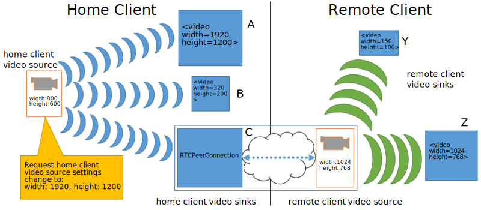
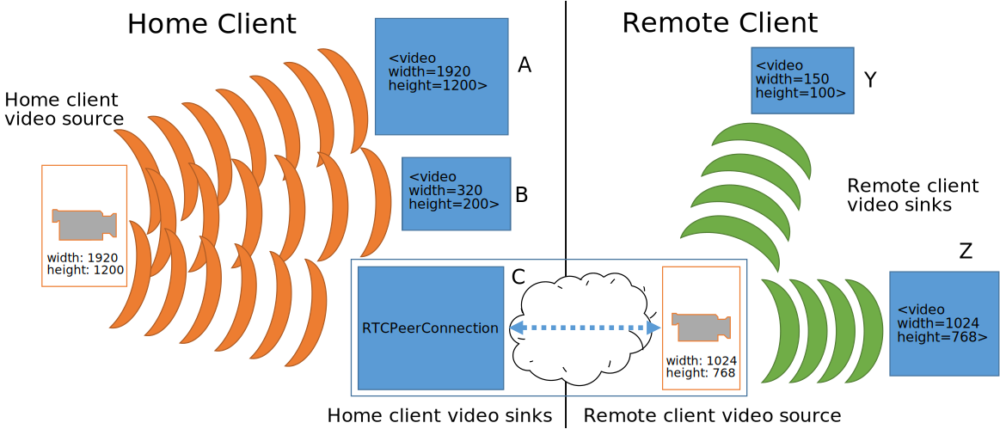
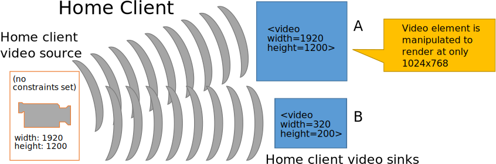
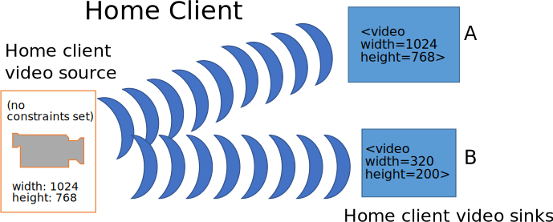
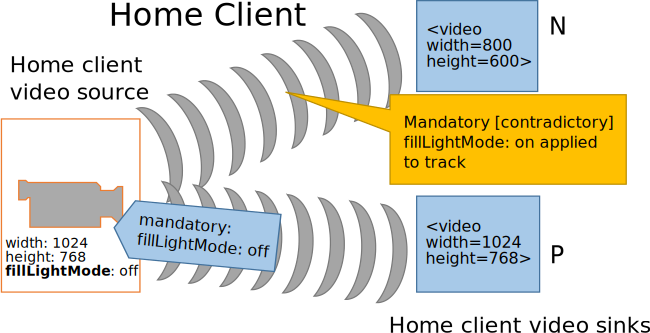

Initial Author of this Specification was Ian Hickson, Google Inc., with the following copyright statement:
© Copyright 2004-2011 Apple Computer, Inc., Mozilla Foundation, and Opera Software ASA. You are granted a license to use, reproduce and create derivative works of this document.
All subsequent changes since 26 July 2011 done by the W3C WebRTC Working Group (and previously the Device APIs Working Group) are under the following Copyright:
© 2011-2020 W3C® (MIT, ERCIM, Keio, Beihang). W3C liability,
trademark and permissive document license rules
apply.
This document defines a set of JavaScript APIs that allow local media,
including audio and video, to be requested from a platform.
This document is not complete. The API is based on preliminary work done in the
WHATWG.
Before this document proceeds to Proposed Recommendation, the WebRTC Working Group intends to address issues that emerged from wide review.
Terminology
- source
-
A source is the "thing" providing the source of a media stream
track. The source is the broadcaster of the media itself. A source can
be a physical webcam, microphone, local video or audio file from the
user's hard drive, network resource, or static image. Note that this
document describes the use of microphone and camera type sources only,
the use of other source types is described in other documents.
An application that has no prior authorization regarding sources is
only given the number of available sources, their type and any
relationship to other devices. Additional information about sources can
become available when applications are authorized to use a source (see
).
Sources do not have constraints — tracks have
constraints. When a source is connected to a track, it must produce
media that conforms to the constraints present on that track, to that
track. Multiple tracks can be attached to the same source. User Agent
processing, such as downsampling, MAY be used to ensure that all tracks
have appropriate media.
Sources have constrainable properties which have
[=capabilities=] and [=settings=]
exposed on tracks. While the constrainable properties are "owned" by
the source, sources MAY be able to accomodate different demands at
once. For this reason, capabilities are common to any (multiple) tracks
that happen to be using the same source, whereas settings MAY differ
per track (e.g., if two different track objects bound to the same
source query capability and settings information, they will get back
the same capabilities, but may get different settings that are tailored
to satisfy their individual constraints).
- Setting (Source Setting)
-
A setting refers to the immediate, current
value of the source's constrainable properties. Settings are always
read-only.
A source conditions may dynamically change, such as when a camera
switches to a lower frame rate due to low light conditions. In these
cases the tracks related to the affected source might not satisfy the
set constraints any longer. The platform SHOULD try to minimize such
excursions as far as possible, but will continue to deliver media even
when a temporary or permanent condition exists that prevents satisfying
the constraints.
Although settings are a property of the source, they are only
exposed to the application through the tracks attached to the source.
This is exposed via the ConstrainablePattern interface.
- Capability
-
For each constrainable property, there is a capability that
describes whether it is supported by the source and if so, the range of
supported values. As with settings, capabilities are exposed to the
application via the ConstrainablePattern interface.
The values of the supported capabilities must be normalized to the
ranges and enumerated types defined in this specification.
A {{MediaStreamTrack/getCapabilities()}} call on
a track returns the same underlying per-source capabilities for all
tracks connected to the source.
Source capabilities are effectively constant. Applications should be
able to depend on a specific source having the same capabilities for
any browsing session.
This API is intentionally simplified. Capabilities are not capable
of describing interactions between different values. For instance, it
is not possible to accurately describe the capabilities of a camera
that can produce a high resolution video stream at a low frame rate and
lower resolutions at a higher frame rate. Capabilities describe the
complete range of each value. Interactions between constraints are
exposed by attempting to apply constraints.
- Constraints
-
Constraints provide a general control surface that allows
applications to both select an appropriate source for a track and, once
selected, to influence how a source operates.
Constraints limit the range of operating modes that a source can use
when providing media for a track. Without provided track constraints,
implementations are free to select a source's settings from the full
ranges of its supported capabilities. Implementations may also adjust
source settings at any time within the bounds imposed by all applied
constraints.
{{MediaDevices/getUserMedia()}} uses constraints
to help select an appropriate source for a track and configure it.
Additionally, the ConstrainablePattern interface on tracks
includes an API for dynamically changing the track's constraints at any
later time.
A track will not be connected to a source using
{{MediaDevices/getUserMedia()}} if its initial constraints cannot be
satisfied. However, the ability to meet the constraints on a track can
change over time, and constraints can be changed. If circumstances
change such that constraints cannot be met, the
ConstrainablePattern interface defines an appropriate error to
inform the application. explains how
constraints interact in more detail.
For each constrainable property, a constraint exists whose name
corresponds with the relevant source setting name and capability
name.
A constraint falls into one of three groups, depending on its place
in the constraints structure. The groups are:
- required constraints are all non-advanced constraints that are
required.
- optional basic constraints are the remaining
non-advanced constraints.
- advanced constraints are all constraints specified
using the
advanced
keyword.
In general, User Agents will have more flexibility to optimize the
media streaming experience the fewer constraints are applied, so
application authors are strongly encouraged to use required
constraints sparingly.
MediaStream API
Introduction
The two main components in the MediaStream API are the
{{MediaStreamTrack}} and {{MediaStream}} interfaces. The
{{MediaStreamTrack}} object represents media of a single
type that originates from one media source in the User Agent, e.g. video
produced by a web camera. A {{MediaStream}} is used to
group several {{MediaStreamTrack}} objects into one unit
that can be recorded or rendered in a media element.
Each {{MediaStream}} can contain zero or more
{{MediaStreamTrack}} objects. All tracks in a
{{MediaStream}} are intended to be synchronized when
rendered. This is not a hard requirement, since it might not be possible
to synchronize tracks from sources that have different clocks. Different
{{MediaStream}} objects do not need to be
synchronized.
While the intent is to synchronize tracks, it could be
better in some circumstances to permit tracks to lose synchronization. In
particular, when tracks are remotely sourced and real-time [[?WEBRTC]],
it can be better to allow loss of synchronization than to accumulate
delays or risk glitches and other artifacts. Implementations are expected
to understand the implications of choices regarding synchronization of
playback and the effect that these have on user perception.
A single {{MediaStreamTrack}} can represent
multi-channel content, such as stereo or 5.1 audio or stereoscopic video,
where the channels have a well defined relationship to each other.
Information about channels might be exposed through other APIs, such as
[[?WEBAUDIO]], but this specification provides no direct access to
channels.
A {{MediaStream}} object has an input and an output
that represent the combined input and output of all the object's tracks.
The output of the {{MediaStream}} controls how the object
is rendered, e.g., what is saved if the object is recorded to a file or
what is displayed if the object is used in a [^video^] element.
A single {{MediaStream}} object can be attached to
multiple different outputs at the same time.
A new {{MediaStream}} object can be created from
existing media streams or tracks using the
{{MediaStream/MediaStream()}} constructor. The constructor argument
can either be an existing {{MediaStream}} object, in
which case all the tracks of the given stream are added to the new
{{MediaStream}} object, or an array of
{{MediaStreamTrack}} objects. The latter form makes it
possible to compose a stream from different source streams.
Both {{MediaStream}} and
{{MediaStreamTrack}} objects can be cloned. A cloned
{{MediaStream}} contains clones of all member tracks from
the original stream. A cloned {{MediaStreamTrack}} has a
set of constraints that is
independent of the instance it is cloned from, which allows media from
the same source to have different constraints applied for different
consumers. The {{MediaStream}} object is also used in
contexts outside {{MediaDevices/getUserMedia}}, such as [[?WEBRTC]].
{{MediaStream}}
The MediaStream constructor composes a new
stream out of existing tracks. It takes an optional argument of type
{{MediaStream}} or an array of
{{MediaStreamTrack}} objects. When the constructor is invoked, the User
Agent must run the following steps:
-
Let stream be a newly constructed
{{MediaStream}} object.
-
Initialize stream.{{MediaStream/id}} attribute to a newly generated
value.
-
If the constructor's argument is present, run the following
steps:
-
Construct a set of tracks tracks based on the type
of argument:
-
A {{MediaStream}} object:
Let tracks be a set containing all the
{{MediaStreamTrack}} objects in the
{{MediaStream}} track
set.
-
A sequence of {{MediaStreamTrack}}
objects:
Let tracks be a set containing all the
{{MediaStreamTrack}} objects in the provided
sequence.
-
For each {{MediaStreamTrack}},
track , in tracks, run the following
steps:
-
If track is already in stream's
track set, skip
track.
-
Otherwise, add track to stream's
track set.
-
Return stream.
The tracks of a {{MediaStream}} are stored in a
track set. The track set MUST contain the
{{MediaStreamTrack}} objects that correspond to the
tracks of the stream. The relative order of the tracks in the set is User
Agent defined and the API will never put any requirements on the order.
The proper way to find a specific {{MediaStreamTrack}}
object in the set is to look it up by its {{MediaStreamTrack/id}}.
An object that reads data from the output of a
{{MediaStream}} is referred to as a
{{MediaStream}} consumer. The list of
{{MediaStream}} consumers currently include media
elements (such as [^video^] and
[^audio^]) [[HTML]], Web Real-Time Communications
(WebRTC; {{RTCPeerConnection}}) [[?WEBRTC]], media recording
(MediaRecorder) [[?mediastream-recording]], image capture
(ImageCapture) [[?image-capture]], and web audio
({{MediaStreamAudioSourceNode}}) [[?WEBAUDIO]].
{{MediaStream}} consumers must be able to
handle tracks being added and removed. This behavior is specified per
consumer.
A {{MediaStream}} object is said to be active when it has at least one
{{MediaStreamTrack}} that has not [= track/ended =]. A {{MediaStream}} that does not
have any tracks or only has tracks that are [= track/ended =]
is inactive.
A {{MediaStream}} object is said to be audible when it has at least one
{{MediaStreamTrack}} whose {{MediaStreamTrack/[[Kind]]}} is "audio"
that has not [= track/ended =]. A {{MediaStream}} that does not have any
audio tracks or only has audio tracks that are [= track/ended =] is
inaudible.
The User Agent may update a {{MediaStream}}'s track set in response to, for example, an external
event. This specification does not specify any such cases, but other
specifications using the MediaStream API may. One such example is the
WebRTC 1.0 [[?WEBRTC]] specification where the track set of a {{MediaStream}}, received
from another peer, can be updated as a result of changes to the media
session.
To add a track track to a
{{MediaStream}} stream, the User Agent MUST
run the following steps:
-
If track is already in stream's track set, then abort these steps.
-
Add track to stream's track set.
-
Fire a track event named {{addtrack}} with
track at stream.
To remove a track track from a
{{MediaStream}} stream, the User Agent MUST
run the following steps:
-
If track is not in stream's track set, then abort these steps.
-
Remove track from stream's track set.
-
Fire a track event named {{removetrack}} with
track at stream.
[Exposed=Window]
interface MediaStream : EventTarget {
constructor();
constructor(MediaStream stream);
constructor(sequence<MediaStreamTrack> tracks);
readonly attribute DOMString id;
sequence<MediaStreamTrack> getAudioTracks();
sequence<MediaStreamTrack> getVideoTracks();
sequence<MediaStreamTrack> getTracks();
MediaStreamTrack? getTrackById(DOMString trackId);
undefined addTrack(MediaStreamTrack track);
undefined removeTrack(MediaStreamTrack track);
MediaStream clone();
readonly attribute boolean active;
attribute EventHandler onaddtrack;
attribute EventHandler onremovetrack;
};
Attributes
- {{id}} of type {{DOMString}}, readonly
-
The id attribute MUST return the value to
which it was initialized when the object was created.
When a {{MediaStream}} is created, the User
Agent MUST generate an identifier string, and MUST initialize the
object's {{id}}
attribute to that string, unless the object is created as part of
a special purpose algorithm that specifies how the stream id must
be initialized. A good practice is to use a UUID [[rfc4122]],
which is 36 characters long in its canonical form. To avoid
fingerprinting, implementations SHOULD use the forms in section
4.4 or 4.5 of RFC 4122 when generating UUIDs.
An example of an algorithm that specifies how the stream id
must be initialized is the algorithm to associate an incoming
network component with a {{MediaStream}} object. [[?WEBRTC]]
- active of type {{boolean}}, readonly
-
The {{active}} attribute MUST return
true if this {{MediaStream}} is
[= stream/active =] and false
otherwise.
- onaddtrack of type {{EventHandler}}
-
The event type of this event handler is {{addtrack}}.
- onremovetrack of type {{EventHandler}}
-
The event type of this event handler is {{removetrack}}.
Methods
- getAudioTracks
-
Returns a sequence of {{MediaStreamTrack}}
objects representing the audio tracks in this stream.
The {{getAudioTracks}}
method MUST return a sequence that represents a snapshot of all
the {{MediaStreamTrack}} objects in this stream's
[=track set=] whose {{MediaStreamTrack/[[Kind]]}} is equal to
"audio". The conversion from the [=track set=] to the sequence is User Agent defined
and the order does not have to be stable between calls.
- getVideoTracks
-
Returns a sequence of {{MediaStreamTrack}}
objects representing the video tracks in this stream.
The {{getVideoTracks}}
method MUST return a sequence that represents a snapshot of all
the {{MediaStreamTrack}} objects in this stream's
[=track set=] whose {{MediaStreamTrack/[[Kind]]}} is equal to
"video". The conversion from the
[=track set=] to the sequence is User Agent defined
and the order does not have to be stable between calls.
- getTracks
-
Returns a sequence of {{MediaStreamTrack}}
objects representing all the tracks in this stream.
The {{getTracks}} method
MUST return a sequence that represents a snapshot of all the
{{MediaStreamTrack}} objects in this stream's
[=track set=], regardless of {{MediaStreamTrack/[[Kind]]}}. The
conversion from the [=track set=] to the sequence is User
Agent defined and the order does not have to be stable between
calls.
- getTrackById
-
The {{getTrackById}}
method MUST return either a {{MediaStreamTrack}}
object from this stream's [=track set=]
whose {{MediaStreamTrack/[[Id]]}} is
equal to trackId, or null, if no such track
exists.
- addTrack
-
Adds the given {{MediaStreamTrack}} to this
{{MediaStream}}.
When the {{addTrack}} method is
invoked, the User Agent MUST run the following steps:
-
Let track be the methods argument and
stream the {{MediaStream}} object
on which the method was called.
-
If track is already in stream's
[=track set=], then abort these
steps.
-
Add track to stream's [=track set=].
- removeTrack
-
Removes the given {{MediaStreamTrack}} object
from this {{MediaStream}}.
When the {{removeTrack}}
method is invoked, the User Agent MUST run the following
steps:
-
Let track be the methods argument and
stream the {{MediaStream}} object
on which the method was called.
-
If track is not in stream's [=track set=], then abort these steps.
-
Remove track from stream's [=track set=].
- clone
-
Clones the given {{MediaStream}} and all its
tracks.
When the {{clone()}} method is invoked, the User
Agent MUST run the following steps:
-
Let streamClone be a newly constructed
{{MediaStream}} object.
-
Initialize streamClone.{{MediaStream.id}} to a newly
generated value.
-
Clone each track in this
{{MediaStream}} object and add the result to
streamClone's track
set.
- Return streamClone.
{{MediaStreamTrack}}
A {{MediaStreamTrack}} object represents a media
source in the User Agent. An example source is a device connected to the
User Agent. Other specifications may define sources for
{{MediaStreamTrack}} that override the behavior specified
here. Several {{MediaStreamTrack}} objects can represent
the same media source, e.g., when the user chooses the same camera in the
UI shown by two consecutive calls to {{MediaDevices/getUserMedia()}}.
The data from a {{MediaStreamTrack}} object does not
necessarily have a canonical binary form; for example, it could just be
"the video currently coming from the user's video camera". This allows
User Agents to manipulate media in whatever fashion is most suitable on
the user's platform.
A script can indicate that a {{MediaStreamTrack}}
object no longer needs its source with the {{MediaStreamTrack/stop()}}
method. When all tracks
using a source have been stopped or ended by some other means, the source
is stopped. If the source is a device
exposed by {{MediaDevices/getUserMedia()}}, then when
the source is stopped, the UA MUST run the following steps:
-
Let deviceId be the device's {{MediaDeviceInfo/deviceId}}.
-
Set {{MediaDevices/[[devicesLiveMap]]}}[deviceId] to
false.
-
If the [=permission state=]
of the permission associated with the device's kind and
deviceId, is not {{PermissionState/"granted"}}, then set
{{MediaDevices/[[devicesAccessibleMap]]}}[deviceId] to
false.
To create a MediaStreamTrack with an underlying
source, and an optional parameter tieSourceToContext,
whose value is true unless explicitely specified, run the
following steps:
-
Let track be a new {{MediaStreamTrack}} object with the
following internal slots:
-
[[\Source]],
initialized to source.
-
[[\Id]],
initialized to a newly generated unique identifier string. See
{{MediaStream.id}} attribute for guidelines on how to generate
such an identifier.
-
[[\Kind]],
initialized to "audio" if source is
an audio source, or "video" if
source is a video source.
-
[[\Label]],
initialized to source's label, if provided by the User
Agent, or "" otherwise. User Agents MAY label audio and
video sources (e.g., "Internal microphone" or "External USB Webcam").
-
[[\ReadyState]],
initialized to {{MediaStreamTrackState/"live"}}.
-
[[\Enabled]],
initialized to true.
-
[[\Muted]],
initialized to true if source is
[= muted =], and false otherwise.
-
[[\Capabilities]],
[[\Constraints]], and
[[\Settings]], all initialized as
specified in the {{ConstrainablePattern}}.
If tieSourceToContext is true,
[=tie track source to context=] with source.
Return track.
To tie track source to context with source, run
the following steps:
-
Let globalObject be the [=relevant global object=].
-
Add source to globalObject's
{{MediaDevices/[[mediaStreamTrackSources]]}}.
To stop all sources of a [=global object=], named globalObject,
the User Agent MUST run the following steps:
For each {{MediaStreamTrack}} object track whose
relevant global object is globalObject,
set track's {{MediaStreamTrack/[[ReadyState]]}} to
{{MediaStreamTrackState/"ended"}}.
For each source in globalObject's {{MediaDevices/[[mediaStreamTrackSources]]}},
[= source/stopped | stop =] source.
The User Agent MUST [=stop all sources=] of a globalObject in the following conditions:
If globalObject is a {{Window}} object and the [=unloading document cleanup steps=]
are executed for its [=associated document=].
If globalObject is a {{WorkerGlobalScope}} object and its
closing flag is set to true.
An implementation may use a per-source reference count to keep track
of source usage, but the specifics are out of scope for this
specification.
To clone a track the User Agent MUST run
the following steps:
-
Let track be the {{MediaStreamTrack}}
object to be cloned.
-
Let source be track's
{{MediaStreamTrack/[[Source]]}}.
-
Let trackClone be the result of
[=create a MediaStreamTrack | creating a MediaStreamTrack=] with
source and the value false.
-
Set trackClone's
[[\Capabilities]] to a clone of
track's
[[\Capabilities]].
-
Set trackClone's
[[\Constraints]] to a clone of
track's
[[\Constraints]].
-
Set trackClone's
[[\Settings]] to a clone of
track's
[[\Settings]].
-
Return trackClone.
Life-cycle and Media Flow
Life-cycle
A {{MediaStreamTrack}} has two states in its
life-cycle: live and ended. A newly created
{{MediaStreamTrack}} can be in either state depending
on how it was created. For example, cloning an ended track results in a
new ended track. The current state is reflected by the object's
{{MediaStreamTrack/readyState}}
attribute.
In the live state, the track is active and media is
available for use by consumers (but may be replaced by
zero-information-content if the {{MediaStreamTrack}} is
[= muted =] or [= enabled | disabled =], see below).
A muted or disabled {{MediaStreamTrack}} renders
either silence (audio), black frames (video), or a
zero-information-content equivalent. For example, a video element
sourced by a muted or disabled {{MediaStreamTrack}}
(contained within a {{MediaStream}} ), is playing but
the rendered content is the muted output.
If the source is a device exposed by {{MediaDevices/getUserMedia()}},
then when a track becomes either
muted or disabled, and this brings all tracks connected to the device
to be either muted, disabled, or stopped, then the UA MAY, using the
device's {{MediaDeviceInfo/deviceId}}, deviceId, set
{{MediaDevices/[[devicesLiveMap]]}}[deviceId] to false,
provided the UA sets it back to true as soon as any
unstopped track connected to this device becomes un-muted or enabled
again.
When a {{MediaStreamTrackState/"live"}}, [= track/muted | unmuted =], and
[= track/enabled =] track sourced by a device exposed
by {{MediaDevices/getUserMedia()}} becomes either
[= track/muted or [= track/enabled | disabled =],
and this brings all tracks connected to the device (regardless
of browsing context) to be either
muted, disabled, or stopped, then the UA SHOULD relinquish the device
within 3 seconds while allowing time for a reasonably-observant user to
become aware of the transition. The UA SHOULD attempt to reacquire the
device as soon as any live track sourced by the device
becomes both [= track/muted | unmuted =] and
[= track/enabled =] again, provided that track's
[=relevant settings object=]'s [=environment settings object/responsible document=]
has focus at that time. If the
document does not have focus at that time,
the UA SHOULD instead queue a task to mute the
track, and not queue a task to unmute it until
the document regains focus.
If reacquiring the device fails, the UA MUST
[= track ended by the User agent | end the track =] (The UA MAY end it earlier
should it detect a device problem, like the device being physically
removed).
The intent is to give users the assurance of privacy that having
physical camera (and microphone) hardware lights off brings, by
aligning physical and logical “privacy indicators”, at least while the
current document is the sole user of a device.
While other applications and documents using the device
simultaneously may interfere with this intent at times, they do not
interfere with the rules laid forth.
The muted/unmuted state of a track reflects whether the source
provides any media at this moment. The enabled/disabled state is under
application control and determines whether the track outputs media (to
its consumers). Hence, media from the source only flows when a
{{MediaStreamTrack}} object is both unmuted and
enabled.
A {{MediaStreamTrack}} is [= track/muted =]
when the source is temporarily unable to
provide the track with data. A track can be muted by a user. Often this
action is outside the control of the application. This could be as a
result of the user hitting a hardware switch or toggling a control in
the operating system / User Agent chrome. A track can also be muted by the
User Agent.
Applications are able to [= track/enabled | enable =] or
disable a {{MediaStreamTrack}} to prevent it from
rendering media from the source. A muted track will however, regardless
of the enabled state, render silence and blackness. A disabled track is
logically equivalent to a muted track, from a consumer point of
view.
For a newly created {{MediaStreamTrack}} object, the
following applies. The track is always enabled unless stated otherwise
(for example when cloned) and the muted state reflects the state of the
source at the time the track is created.
A {{MediaStreamTrack}} object is said to
end when the source of the track is disconnected or
exhausted.
If all {{MediaStreamTrack}}s that are using the same
source are [= track/ended =], the source will be
[= source/stopped =].
When a {{MediaStreamTrack}} object ends for any
reason (e.g., because the user rescinds the permission for the page to
use the local camera, or because the application invoked the
{{MediaStreamTrack/stop()}} method on
the {{MediaStreamTrack}} object, or because the User
Agent has instructed the track to end for any reason) it is said to be
ended.
When a {{MediaStreamTrack}} track
ends for any reason other than the {{MediaStreamTrack/stop()}} method being
invoked, the User Agent MUST queue a task that runs the following
steps:
-
If track's {{MediaStreamTrack/[[ReadyState]]}}
has the value {{MediaStreamTrackState/"ended"}} already, then abort these
steps.
-
Set track's {{MediaStreamTrack/[[ReadyState]]}}
to {{MediaStreamTrackState/"ended"}}.
-
Notify track's source that track is
[= track/ended =] so that the source may be [= source/stopped =], unless other
{{MediaStreamTrack}} objects depend on it.
-
[=Fire an event=] named ended at the object.
If the end of the track was reached due to a user request, the event
source for this event is the user interaction event source.
To invoke the device permission revocation algorithm with
{{PermissionName}} permissionName and
{{DevicePermissionDescriptor/deviceId}} deviceId, run the
following steps:
-
Let tracks be the set of all currently
{{MediaStreamTrackState/"live"}} MediaStreamTracks
that fit the following criteria:
-
If deviceId is not
undefined, tracks
whose associated deviceId matches deviceId
-
If deviceId is
undefined, tracks whose
permission associated with this kind of track (e.g.
{{PermissionName/"camera"}}, {{PermissionName/"microphone"}})
matches permissionName
-
For each track in tracks,
end the track.
Media Flow
There are two dimensions related to the media flow for a
{{MediaStreamTrackState/"live"}} {{MediaStreamTrack}} : muted / not
muted, and enabled / disabled.
Muted refers to the input to the
{{MediaStreamTrack}}. If live samples are not made
available to the {{MediaStreamTrack}} it is muted.
{{Muted}} is outside the control of web applications, but can be observed by
the application by reading the {{MediaStreamTrack/muted}} attribute and listening
to the associated events {{mute}} and {{unmute}}. There can be
several reasons for a {{MediaStreamTrack}} to be muted:
the user pushing a physical mute button on the microphone, the user
closing a laptop lid with an embedded camera, the user toggling a
control in the operating system, the user clicking a mute button in the
User Agent chrome, the User Agent (on behalf of the user) mutes, etc.
On some operating systems, microphone access may
get stolen from the User Agent when another application with higher-audio priority gets access to it,
for instance in case of an incoming phone call on mobile OS. The User Agent SHOULD provide
this information to the web application through {{MediaStreamTrack/muted}} and
its associated events.
Whenever the User Agent initiates such a change, it MUST queue a
task, using the user interaction task source, to [=set a track's muted
state=] to the state desired by the user.
task, using the user interaction task source, to [=set a track's muted
state=] to the state desired by the user.
To set a track's muted state to
newState, the User Agent MUST run the following steps:
-
Let track be the {{MediaStreamTrack}} in
question.
-
If track.{{MediaStreamTrack/[[Muted]]}} is already
newState, then abort these steps.
-
Set track.{{MediaStreamTrack/[[Muted]]}} to
newState.
-
If newState is true let
eventName be {{mute}}, otherwise
{{unmute}}.
-
[=Fire an event=] named eventName on
track.
Enabled/disabled on the other hand is
available to the application to control (and observe) via the
{{MediaStreamTrack/enabled}}
attribute.
The result for the consumer is the same in the sense that whenever
{{MediaStreamTrack}} is muted or disabled (or both) the
consumer gets zero-information-content, which means silence for audio
and black frames for video. In other words, media from the source only
flows when a {{MediaStreamTrack}} object is both
unmuted and enabled. For example, a video element sourced by a muted or
disabled {{MediaStreamTrack}} (contained in a
{{MediaStream}} ), is playing but rendering
blackness.
For a newly created {{MediaStreamTrack}} object, the
following applies: the track is always enabled unless stated otherwise
(for example when cloned) and the muted state reflects the state of the
source at the time the track is created.
Tracks and Constraints
{{MediaStreamTrack}} is a constrainable
object as defined in the Constrainable Pattern section.
Constraints are set on tracks and may affect sources.
Whether Constraints were provided at track
initialization time or need to be established later at runtime, the
APIs defined in the ConstrainablePattern Interface allow the
retrieval and manipulation of the constraints currently established on
a track.
Once ended, a track will continue exposing a
list of inherent constrainable track properties.
This list contains deviceId,
facingMode and
groupId.
Constrainable Properties
The names of the initial set of constrainable properties for
MediaStreamTrack are defined below.
The following constrainable properties are defined to apply to both
video and audio {{MediaStreamTrack}} objects:
| Property Name |
Values |
Notes |
| deviceId |
DOMString |
The identifier of the device generating the content of the
{{MediaStreamTrack}}. It conforms with the definition of
{{MediaDeviceInfo.deviceId}}.
Note that the setting of this property is
uniquely determined by the source that is attached to the
{{MediaStreamTrack}}. In particular, {{MediaStreamTrack/getCapabilities()}} will return only a
single value for deviceId. This property can therefore be used
for initial media selection with {{MediaDevices/getUserMedia()}}. However, it is not useful
for subsequent media control with {{MediaStreamTrack/applyConstraints()}}, since any attempt to
set a different value will result in an unsatisfiable
ConstraintSet.
If a string of length 0 is used as a deviceId value constraint
with {{MediaDevices/getUserMedia()}}, it
MAY be interpreted as if the constraint is not specified.
|
| groupId |
{{DOMString}} |
The [=document=]-unique group identifier for the device
generating the content of the {{MediaStreamTrack}}.
It conforms with the definition of
{{MediaDeviceInfo.groupId}}.
Note that the setting of this property is uniquely
determined by the source that is attached to the
{{MediaStreamTrack}}. In particular, {{MediaStreamTrack/getCapabilities()}} will return only a
single value for groupId. Since this property is not stable
between browsing sessions, its usefulness for initial media
selection with {{MediaDevices/getUserMedia()}} is limited. It is not useful
for subsequent media control with {{MediaStreamTrack/applyConstraints()}}, since any attempt to
set a different value will result in an unsatisfiable
ConstraintSet.
|
The following constrainable properties are defined to apply only to
video {{MediaStreamTrack}} objects:
| Property Name |
Values |
Notes |
| width |
{{ConstrainULong}} |
The width or width range, in pixels. As a capability, the
range should span the video source's pre-set width values with
min being equal to 1 and max being the largest
width. The User Agent MUST support downsampling to any value
between the min width range value and the native resolution width. |
| height |
{{ConstrainULong}} |
The height or height range, in pixels. As a capability, the
range should span the video source's pre-set height values with
min being equal to 1 and max being the largest
height. The User Agent MUST support downsampling to any value
between the min height range value and the native resolution height. |
| frameRate |
{{ConstrainDouble}} |
The exact frame rate (frames per second) or frame rate range.
If video source's pre-set can determine frame rate values, the range, as a capacity,
should span the video source's pre-set frame rate values with
min being equal to 0 and max being the largest frame rate.
The User Agent MUST support frame rates obtained from
integral decimation of the native resolution frame rate.
If this frame rate cannot be determined (e.g. the source does not
natively provide a frame rate, or the frame rate cannot be
determined from the source stream), then this value MUST refer to
the User Agent's vsync display rate. |
| aspectRatio |
{{ConstrainDouble}} |
The exact aspect ratio (width in pixels divided by height in
pixels, represented as a double rounded to the tenth decimal
place) or aspect ratio range. |
| facingMode |
{{ConstrainDOMString}} |
This string (or each string, when a list) should be one of
the members of {{VideoFacingModeEnum}}. The
members describe the directions that the camera can face, as seen
from the user's perspective. Note that getConstraints may not return
exactly the same string for strings not in this enum. This
preserves the possibility of using a future version of WebIDL
enum for this property. |
| resizeMode |
{{ConstrainDOMString}} |
This string (or each string, when a list) should be one of the
members of {{VideoResizeModeEnum}}. The members
describe the means by which the resolution can be derived by
the UA. In other words, whether the UA is allowed to use
cropping and downscaling on the camera output.
The UA MAY disguise concurrent use of
the camera, by cropping and/or downscaling to mimic native
resolutions when "none" is used, but only when the camera is in
use in another browsing context. Note that
getConstraints may not return
exactly the same string for strings not in this enum. This
preserves the possibility of using a future version of WebIDL
enum for this property.
|
On systems where it's desirable to sometimes automatically flip the X
and Y axis of the resulting captured video in response to ongoing
environmental factors, the {{width}}, {{height}} and {{aspectRatio}}
constraints and capabilities MUST remain unaffected in all algorithms
and be considered in the primary orientation only, except for the
{{MediaStreamTrack/getSettings()}} algorithm where settings for these
constrainable properties MUST be flipped if necessary to match the
returned dimensions of the captured video at any point in time.
The primary orientation of a system that supports flipping
the X and Y axis of resulting captured video is defined by the User
Agent for the particular system.
On systems that support automatic switching between landscape and
portrait mode, User Agents are encouraged to make landscape mode the
primary orientation.
enum VideoFacingModeEnum {
"user",
"environment",
"left",
"right"
};
| VideoFacingModeEnum Enumeration
description |
user |
The source is facing toward the user (a self-view
camera).
|
environment |
The source is facing away from the user (viewing the
environment).
|
left |
The source is facing to the left of the user.
|
right |
The source is facing to the right of the user.
|
Below is an illustration of the video facing modes in relation to
the user.

enum VideoResizeModeEnum {
"none",
"crop-and-scale"
};
| VideoResizeModeEnum Enumeration
description |
| none |
This resolution and frame rate is offered by the camera,
its driver, or the OS.
Note: The UA MAY report this value to
disguise concurrent use, but only when the camera is in use
in another browsing context.
|
| crop-and-scale |
This resolution is downscaled and/or cropped from a higher
camera resolution by the User Agent, or its frame rate is
decimated by the User Agent. The media MUST NOT be
upscaled, stretched or have fake data created that did not
occur in the input source.
|
The following constrainable properties are defined to apply only to
audio {{MediaStreamTrack}} objects:
| Property Name |
Values |
Notes |
| sampleRate |
{{ConstrainULong}} |
The sample rate in samples per second for the audio
data. |
| sampleSize |
{{ConstrainULong}} |
The linear sample size in bits. This constraint can only be
satisfied for audio devices that produce linear samples. |
| echoCancellation |
{{ConstrainBoolean}} |
When one or more audio streams is being played in the
processes of various microphones, it is often desirable to
attempt to remove all the sound being played from the input signals
recorded by the microphones. This is referred to as echo
cancellation. There are cases where it is not needed and it is
desirable to turn it off so that no audio artifacts are
introduced. This allows applications to control this
behavior. |
| autoGainControl |
{{ConstrainBoolean}} |
Automatic gain control is often desirable on the input signal
recorded by the microphone. There are cases where it is not
needed and it is desirable to turn it off so that the audio is
not altered. This allows applications to control this
behavior. |
| noiseSuppression |
{{ConstrainBoolean}} |
Noise suppression is often desirable on the input signal
recorded by the microphone. There are cases where it is not
needed and it is desirable to turn it off so that the audio is
not altered. This allows applications to control this
behavior. |
| latency |
{{ConstrainDouble}} |
The latency or latency range, in seconds. The latency is the
time between start of processing (for instance, when sound occurs
in the real world) to the data being available to the next step
in the process. Low latency is critical for some applications;
high latency may be acceptable for other applications because it
helps with power constraints. The number is expected to be the
target latency of the configuration; the actual latency may show
some variation from that. |
| channelCount |
{{ConstrainULong}} |
The number of independent channels of sound that the audio
data contains, i.e. the number of audio samples per sample
frame. |
{{MediaStreamTrackEvent}}
The {{addtrack}}
and {{removetrack}} events use the
{{MediaStreamTrackEvent}} interface.
The {{addtrack}} and {{removetrack}} events notify
the script that the [=track set=] of a
{{MediaStream}} has been updated by the User Agent.
Firing a track event named
e with a {{MediaStreamTrack}}
track means that an event with the name e, which
does not bubble (except where otherwise stated) and is not cancelable
(except where otherwise stated), and which uses the
{{MediaStreamTrackEvent}} interface with the
{{MediaStreamTrackEvent/track}}
attribute set to track, MUST be created and dispatched at the
given target.
[Exposed=Window]
interface MediaStreamTrackEvent : Event {
constructor(DOMString type, MediaStreamTrackEventInit eventInitDict);
[SameObject] readonly attribute MediaStreamTrack track;
};
Constructors
- constructor()
-
Constructs a new
{{MediaStreamTrackEvent}}.
Attributes
- {{track}} of type {{MediaStreamTrack}}, readonly
-
The track
attribute represents the {{MediaStreamTrack}}
object associated with the event.
dictionary MediaStreamTrackEventInit : EventInit {
required MediaStreamTrack track;
};
Dictionary MediaStreamTrackEventInit Members
- track of type {{MediaStreamTrack}}, required
The model: sources, sinks, constraints, and settings
User Agents provide a media pipeline from sources to sinks. In a User Agent,
sinks are the <[^img^]>, <[^video^]>, and <[^audio^]> tags.
Traditional sources include streamed content, files, and web resources. The
media produced by these sources typically does not change over time - these
sources can be considered to be static.
The sinks that display these sources to the user (the actual tags
themselves) have a variety of controls for manipulating the source content.
For example, an <[^img^]> tag scales down a huge source image of
1600x1200 pixels to fit in a rectangle defined with
width="400" and height="300".
Sources have a lifetime. By default, a source lifetime is tied
to the context that created it. For instance, sources created
by {{MediaDevices.getUserMedia()}} are considered as created
by its navigator.{{mediaDevices}} context.
Similarly, sources of {{RTCRtpReceiver}} objects are bound
to the {{RTCPeerConnection}} itself, which is bound to its creation context.
Except if stated explicitly in the definition of specific sources,
a source is always [= source/stopped =] when its creation context goes away.
It should be noted that two sources of different contexts
may use the same capture device at the same time.
One source can be stopped independently of the other one.
The getUserMedia API adds dynamic sources such as microphones and
cameras - the characteristics of these sources can change in response to
application needs. These sources can be considered to be dynamic in nature.
A <[^video^]> element that displays media from a dynamic source can
either perform scaling or it can feed back information along the media
pipeline and have the source produce content more suitable for display.
Note: This sort of feedback loop is obviously just
enabling an "optimization", but it's a non-trivial gain. This
optimization can save battery, allow for less network congestion,
etc...
Note that {{MediaStream}} sinks (such as
<[^video^]>, <[^audio^]>, and even
{{RTCPeerConnection}}) will continue to have mechanisms to further
transform the source stream beyond that which the Settings,
Capabilities, and Constraints described in this specification
offer. (The sink transformation options, including those of
{{RTCPeerConnection}}, are outside the scope of this
specification.)
The act of changing or applying a track constraint may affect the
[=settings=] of all tracks sharing that source and
consequently all down-level sinks that are using that source. Many sinks
may be able to take these changes in stride, such as the
<[^video^]> element or {{RTCPeerConnection}}.
Others like the Recorder API may fail as a result of a source setting
change.
The {{RTCPeerConnection}} is an interesting object because it
acts simultaneously as both a sink and a source for
over-the-network streams. As a sink, it has source transformational
capabilities (e.g., lowering bit-rates, scaling-up / down resolutions, and
adjusting frame-rates), and as a source it could have its own settings
changed by a track source.
To illustrate how changes to a given source impact various sinks,
consider the following example. This example only uses width and height,
but the same principles apply to all of the Settings exposed in this
specification. In the first figure a home client has obtained a video
source from its local video camera. The source's width and height settings
are 800 pixels and 600 pixels, respectively. Three
{{MediaStream}} objects on the home client contain tracks
that use this same <{{MediaStreamTrack/deviceId}}. The three media streams
are connected to three different sinks: a <[^video^]>
element (A), another <[^video^]> element (B), and a peer
connection (C). The peer connection is streaming the source video to a
remote client. On the remote client there are two media streams with tracks
that use the peer connection as a source. These two media streams are
connected to two <[^video^]> element sinks (Y and
Z).

Note that at this moment, all of the sinks on the home client must apply
a transformation to the original source's provided dimension settings. B is
scaling the video down, A is scaling the video up (resulting in loss of
quality), and C is also scaling the video up slightly for sending over the
network. On the remote client, sink Y is scaling the video way
down, while sink Z is not applying any scaling.
In response to {{MediaStreamTrack/applyConstraints()}} being called, one of the
tracks wants a higher resolution (1920 by 1200 pixels) from the home
client's video source.

Note that the source change immediately affects all of the tracks and
sinks on the home client, but does not impact any of the sinks (or sources)
on the remote client. With the increase in the home client source video's
dimensions, sink A no longer has to perform any scaling, while sink B must
scale down even further than before. Sink C (the peer connection) must now
scale down the video in order to keep the transmission constant to the
remote client.
While not shown, an equally valid settings change request could be made
on the remote client's side. In addition to impacting sink Y and Z in the
same manner as A, B and C were impacted earlier, it could lead to
re-negotiation with the peer connection on the home client in order to
alter the transformation that it is applying to the home client's video
source. Such a change is NOT REQUIRED to change anything related to sink A
or B or the home client's video source.
Note that this specification does not define a mechanism by which a
change to the remote client's video source could automatically trigger a
change to the home client's video source. Implementations may choose to
make such source-to-sink optimizations as long as they only do so within
the constraints established by the application, as the next example
demonstrates.
It is fairly obvious that changes to a given source will impact sink
consumers. However, in some situations changes to a given sink may also
cause implementations to adjust a source's settings. This is illustrated in
the following figures. In the first figure below, the home client's video
source is sending a video stream sized at 1920 by 1200 pixels. The video
source is also unconstrained, such that the exact source dimensions are
flexible as far as the application is concerned. Two
{{MediaStream}} objects contain tracks with the same
{{MediaStreamTrack/deviceId}}, and those {{MediaStream}}s
are connected to two different <[^video^]> element sinks A
and B. Sink A has been sized to width="1920" and
height="1200" and is displaying the source's video content
without any transformations. Sink B has been sized smaller and, as a
result, is scaling the video down to fit its rectangle of 320 pixels across
by 200 pixels down.

When the application changes sink A to a smaller dimension (from 1920 to
1024 pixels wide and from 1200 to 768 pixels tall), the User Agent's media
pipeline may recognize that none of its sinks require the higher source
resolution, and needless work is being done both on the part of the source
and sink A. In such a case and without any other constraints forcing the
source to continue producing the higher resolution video, the media
pipeline MAY change the source resolution:

In the above figure, the home client's video source resolution was
changed to the greater of that from sink A and B in order to optimize
playback. While not shown above, the same behavior could apply to peer
connections and other sinks.
It is possible that constraints can be applied to a track which a
source is unable to satisfy, either because the source itself cannot
satisfy the constraint or because the source is already satisfying a
conflicting constraint. When this happens, the promise returned from
{{MediaStreamTrack/applyConstraints()}}
will be rejected, without applying any of the new constraints. Since
no change in constraints occurs in this case, there is also no required
change to the source itself as a result of this condition. Here is an
example of this behavior.
In this example, two media streams each have a video track that share
the same source. The first track initially has no constraints applied. It
is connected to sink N. Sink N has a resolution of 800 by 600 pixels and is
scaling down the source's resolution of 1024 by 768 to fit. The other track
has a required constraint forcing off
the source's fill light; it is connected to sink P. Sink P has a width and
height equal to that of the source.

Now, the first track adds a
required constraint that the fill light
should be forced on. At this point, both required constraints cannot be
satisfied by the source (the fill light cannot be simultaneously on and off
at the same time). Since this state was caused by the first track's attempt
to apply a conflicting constraint, the constraint application fails and
there is no change in the source's settings nor to the constraints on
either track.
MediaStreams in Media Elements
A {{MediaStream}} may be assigned to media elements. A
{{MediaStream}} is not preloadable or seekable and represents a
simple, potentially infinite, linear
media timeline. The timeline
starts at 0 and increments linearly in real time as long as the
media element is
potentially playing. The timeline does not increment when
the playout of the {{MediaStream}} is paused.
User Agents that support this specification MUST support the
{{HTMLMediaElement/srcObject}}
attribute of the {{HTMLMediaElement}} interface defined in
[[HTML]], which includes support for playing {{MediaStream}}
objects.
The [[HTML]] document outlines how the {{HTMLMediaElement}}
works with a media provider object. The following applies when the
media provider object is a {{MediaStream}}:
-
Whenever an {{AudioTrack}}
or a {{VideoTrack}}
is created, the id and label attributes must
be initialized to the corresponding attributes of the
{{MediaStreamTrack}}, the kind attribute must be
initialized to "main" and the language attribute to the
empty string
- The User Agent MUST always play the current data from the
{{MediaStream}} and MUST NOT buffer.
-
Since the order in the {{MediaStream}} 's [=track set=] is undefined, no requirements are put on how
the {{AudioTrackList}}
and {{VideoTrackList}}
is ordered
-
If the element is an {{HTMLVideoElement}}, then it is said
to have ended playback when it
has ended video playback, which is when:
-
The element's
{{HTMLMediaElement/readyState}}
is {{HTMLMediaElement/HAVE_METADATA}}
or greater, and
-
The {{MediaStream}} state is
[= stream/inactive =] after having been
[= stream/active =], or
-
The {{MediaStream}} state is
[= stream/active =] after having been
[= stream/inactive =] after having been
[= stream/active =] after
{{HTMLMediaElement/play()}} was last called, and
{{HTMLMediaElement/autoplay}} is false.
Once playback has ended, it won't resume if new
{{MediaStreamTrack}}s are added to the
{{MediaStream}} unless {{HTMLMediaElement/autoplay}} is
true or the element is restarted, e.g., by the web
application calling {{HTMLMediaElement/play()}}.
-
If the element is an {{HTMLAudioElement}}, then it is said
to have ended playback when it
has ended audio playback, which is when:
-
The element's
{{HTMLMediaElement/readyState}}
is {{HTMLMediaElement/HAVE_METADATA}}
or greater, and
-
The {{MediaStream}} state is
[= stream/inaudible =] after having been
[= stream/audible =], or
-
The {{MediaStream}} state is
[= stream/audible =] after having been
[= stream/inaudible =] after having been
[= stream/audible =] after {{HTMLMediaElement/play()}} was last called, and
{{HTMLMediaElement/autoplay}} is false.
Once playback has ended, it won't resume if new audio
{{MediaStreamTrack}}s are added to the
{{MediaStream}} unless {{HTMLMediaElement/autoplay}} is
true or the element is restarted, e.g., by the web
application calling {{HTMLMediaElement/play()}}.
-
Any calls to the {{HTMLMediaElement/fastSeek()}} method on a {{HTMLMediaElement}} must be
ignored
The nature of the {{MediaStream}} places certain
restrictions on the behavior of attributes of the associated
{{HTMLMediaElement}} and on the operations that can be performed
on it, as shown below:
| Attribute Name |
Attribute Type |
Setter/Getter Behavior When Provider is a MediaStream |
Additional considerations |
|
{{HTMLMediaElement/preload}}
|
{{DOMString}} |
On getting: none. On setting: ignored. |
A {{MediaStream}} cannot be preloaded. |
|
{{HTMLMediaElement/buffered}}
|
{{TimeRanges}}
|
buffered.length MUST return 0. |
A {{MediaStream}} cannot be preloaded. Therefore, the amount buffered
is always an empty time range. |
|
{{HTMLMediaElement/currentTime}}
|
{{double}} |
Any non-negative integer. The initial value is 0 and
the values increments linearly in real time whenever the stream is
playing. |
The value is the
official playback position, in seconds. Any attempt to alter it
MUST be ignored.
|
|
{{HTMLMediaElement/seeking}}
|
{{boolean}} |
false |
A {{MediaStream}} is not seekable. Therefore, this attribute MUST
always return the value false. |
|
{{HTMLMediaElement/defaultPlaybackRate}}
|
{{double}} |
On getting: 1.0. On setting: ignored. |
A {{MediaStream}} is not seekable. Therefore, this attribute MUST
always return the value 1.0 and any attempt to alter it
MUST be ignored. Note that this also means that the
ratechange
event will not fire. |
|
{{HTMLMediaElement/playbackRate}}
|
{{double}} |
On getting: 1.0. On setting: ignored. |
A {{MediaStream}} is not seekable. Therefore, this attribute MUST
always return the value 1.0 and any attempt to alter it
MUST be ignored. Note that this also means that the
ratechange
event will not fire. |
|
{{HTMLMediaElement/played}}
|
{{TimeRanges}}
|
played.length MUST return 1.
played.start(0) MUST return 0.
played.end(0) MUST return the last known {{HTMLMediaElement/currentTime}}.
|
A {{MediaStream}}'s timeline always consists of a
single range, starting at 0 and extending up to the currentTime. |
|
{{HTMLMediaElement/seekable}}
|
{{TimeRanges}}
|
seekable.length MUST return 0. |
A {{MediaStream}} is not seekable. |
|
{{HTMLMediaElement/loop}}
|
{{boolean}} |
true, false |
Setting the {{HTMLMediaElement/loop}} attribute has no effect since a
{{MediaStream}} has no defined end and therefore
cannot be looped. |
Since none of the setters listed above alter internal state of the
{{HTMLMediaElement}}, once a {{MediaStream}} is no longer
the element's assigned media provider object, the attributes listed will appear to
resume the values they had before a stream was assigned to the element.
A {{MediaStream}} stops being the element's assigned media provider object when {{HTMLMediaElement/srcObject}} is assigned null or a non-stream object,
just ahead of the media element load algorithm. As a result, the ratechange
event may fire (from step 7) if {{HTMLMediaElement/playbackRate}}
and {{HTMLMediaElement/defaultPlaybackRate}} were different from before a
{{MediaStream}} was assigned.
Error Handling
Some operations throw or fire OverconstrainedError. This is
an extension of {{DOMException}} that carries additional
information related to constraints failure.
OverconstrainedError Interface
[Exposed=Window]
interface OverconstrainedError : DOMException {
constructor(DOMString constraint, optional DOMString message = "");
readonly attribute DOMString constraint;
};
Constructors
OverconstrainedError-
Run the following steps:
-
Let constraint be the constructor's first
argument.
-
Let message be the constructor's second argument.
-
Let e be a new
{{OverconstrainedError}} object.
-
Invoke the {{DOMException}} constructor of
e with the message argument set to
message and the name argument set to
"OverconstrainedError".
This name does not have a mapping to a legacy
code so e's code attribute will return
0.
-
Set e.constraint to constraint.
-
Return e.
Attributes
constraint of type {{DOMString}}, readonly-
The name of a constraint associated with this error, or
"" if no specific constraint name is revealed.
Enumerating Local Media Devices
This section describes an API that the script can use to query the User
Agent about connected media input and output devices (for example a web
camera or a headset).
`Navigator` Interface Extensions
partial interface Navigator {
[SameObject, SecureContext] readonly attribute MediaDevices mediaDevices;
};
Attributes
- mediaDevices of type {{MediaDevices}}, readonly
-
Returns the {{MediaDevices}} object associated with
this {{Navigator}} object.
{{MediaDevices}}
The MediaDevices object is the entry point
to the API used to examine and get access to media devices available to
the User Agent.
On page load, run the following steps:
-
On the relevant global
object, run the following steps:
-
Create three internal slots: [[\devicesLiveMap]],
[[\devicesAccessibleMap]], and [[\kindsAccessibleMap]], each
initialized to a different empty object.
-
Create one internal slot: [[\storedDeviceList]], initialized
to the list of all media input and/or output devices available
to the User Agent.
-
Create one internal slot: [[\canExposeCameraInfo]], initialized
to false.
-
Create one internal slot: [[\canExposeMicrophoneInfo]], initialized
to false.
-
Create one internal slot: [[\mediaStreamTrackSources]], initialized
to an empty set.
-
For each kind of device, kind, that
{{MediaDevices.getUserMedia()}} exposes, set
{{MediaDevices/[[kindsAccessibleMap]]}}[kind] either to true
if the [=permission state=]
of the permission associated with kind (e.g. {{PermissionName/"camera"}},
{{PermissionName/"microphone"}}), is {{PermissionState/"granted"}}, or to false otherwise.
-
For each individual device that {{MediaDevices.getUserMedia()}}
exposes, using the device's
deviceId, deviceId, set
{{MediaDevices/[[devicesLiveMap]]}}[deviceId] to false, and
set {{MediaDevices/[[devicesAccessibleMap]]}}[deviceId] either to
true if the [=permission state=]
of the permission associated with the device’s kind and
deviceId, is {{PermissionState/"granted"}}, or to false otherwise.
For each kind of device, kind, that {{MediaDevices/getUserMedia()}} exposes, [=permission state|whenever a transition occurs of the
permission state=] of the permission associated with kind,
run the following steps:
-
If the transition is to {{PermissionState/"granted"}} from another value, then set
{{MediaDevices/[[kindsAccessibleMap]]}}[kind] to true.
-
If the transition is from {{PermissionState/"granted"}} to another value, then set
{{MediaDevices/[[kindsAccessibleMap]]}}[kind] to false.
For each device that {{MediaDevices/getUserMedia()}} exposes, whenever a transition occurs of the
[=permission state=] of the permission associated with the device's kind
and the device's deviceId, deviceId, run the following
steps:
-
If the transition is to {{PermissionState/"granted"}} from another value, then set
{{MediaDevices/[[devicesAccessibleMap]]}}[deviceId] to true,
if it isn’t already true.
-
If the transition is from {{PermissionState/"granted"}} to another value, and the
device is currently [= source/stopped =], then set
{{MediaDevices/[[devicesAccessibleMap]]}}[deviceId] to
false.
When new media input and/or output devices are made available to the
User Agent, or any available input and/or output device becomes
unavailable, or the system default for input and/or output devices of a
{{MediaDeviceKind}} changed, the User Agent MUST run the following
device change notification steps for each {{MediaDevices}}
object for which [=device enumeration can proceed=] is true,
but for no other {{MediaDevices}} object:
-
Let lastExposedDevices be the result of
[=creating a list of device info objects=] for
{{MediaDevices/[[storedDeviceList]]}} and the
[=relevant settings object=]'s
[=environment settings object/responsible document=].
-
Let deviceList be the list of all media input and/or
output devices available to the User Agent.
-
Let newExposedDevices be the result of
[=creating a list of device info objects=] for
deviceList and the [=relevant settings object=]'s
[=environment settings object/responsible document=].
-
If the {{MediaDeviceInfo}} objects in newExposedDevices
match those in lastExposedDevices and have the same order,
then abort these steps.
Due to the {{MediaDevices/enumerateDevices}} algorithm, the
above step limits firing the devicechange event to documents
[=allowed to use=] {{MediaDevices/enumerateDevices}} to enumerate
devices of a particular {{MediaDeviceKind}}.
-
Set {{MediaDevices/[[storedDeviceList]]}} to
deviceList.
-
Queue a task that fires a simple event named devicechange at the
{{MediaDevices}} object.
The User Agent MAY combine firing multiple events into firing one
event when several events are due or when multiple devices are added
or removed at the same time, e.g. a camera with a microphone.
Additionally, if a {{MediaDevices}} object that was traversed comes
to meet the [=device enumeration can proceed=] criteria later (e.g.
gains focus), the User Agent MUST
execute the [=device change notification steps=] on the {{MediaDevices}}
object at that time.
These events are potentially triggered
simultaneously on documents of different origins. User Agents MAY add
fuzzing on the timing of events to avoid cross-origin activity
correlation.
[Exposed=Window, SecureContext]
interface MediaDevices : EventTarget {
attribute EventHandler ondevicechange;
Promise<sequence<MediaDeviceInfo>> enumerateDevices();
};
Attributes
- ondevicechange of type {{EventHandler}}
-
The event type of this event handler is devicechange.
Methods
- enumerateDevices
-
Collects information about the User Agent's available media
input and output devices.
This method returns a promise. The promise will be
[=upon fulfillment|fulfilled=] with a sequence of
{{MediaDeviceInfo}} objects representing the
User Agent's available media input and output devices if
enumeration is successful.
Elements of this sequence that represent input devices will be
of type {{InputDeviceInfo}} which extends
{{MediaDeviceInfo}}.
Camera and microphone sources SHOULD
be enumerable. Specifications that add additional types of source
will provide recommendations about whether the source type should
be enumerable.
When the {{MediaDevices/enumerateDevices()}} method is
called, the User Agent must run the following steps:
-
Let p be a new promise.
-
Run the following steps in parallel:
-
Let document be the [=relevant settings object=]'s
[=environment settings object/responsible document=].
-
The User Agent MUST wait to proceed to the next step until
[=device enumeration can proceed=] is true.
The User Agent MAY wait to proceed to the next step
until document is [=Document/fully active=]
and has
focus.
-
Let resultList be the result of
[=creating a list of device info objects=] for
{{MediaDevices/[[storedDeviceList]]}} and
document.
-
[= resolve =] p with resultList.
-
Return p.
To perform
creating a list of device info objects for
deviceList and document,
run the following steps:
Let resultList be an empty list.
-
Let microphoneList, cameraList and otherDeviceList be empty lists.
-
Run the following sub steps for each discovered device in deviceList, device:
-
If device is not a microphone, or document is not
[=allowed to use=] the feature identified by "microphone",
abort these sub steps and continue with the next device (if any).
-
Let deviceInfo be the result of
[=creating a device info object=] to represent device.
-
If device is the system default microphone,
prepend deviceInfo to microphoneList.
Otherwise, append deviceInfo to microphoneList.
-
Run the following sub steps for each discovered device in deviceList, device:
-
If device is not a camera, or document is not
[=allowed to use=] the feature identified by "camera",
abort these sub steps and continue with the next device (if any).
-
Let deviceInfo be the result of
[=creating a device info object=] to represent device.
-
If device is the system default camera,
prepend deviceInfo to cameraList.
Otherwise, append deviceInfo to cameraList.
-
If [=device information can be exposed=] is false,
run the following sub steps:
-
If microphoneList is not empty, truncate microphoneList to its first item.
-
If cameraList is not empty, truncate cameraList to its first item.
-
Run the following sub steps for each discovered device in deviceList, device:
-
If device is a microphone or device is a camera,
abort these sub steps and continue with the next device (if any).
-
Run the [=exposure decision algorithm for devices other than camera and microphone=],
with device, microphoneList and cameraList as input.
If the result of this algorithm is false,
abort these sub steps and continue with the next device (if any).
-
Let deviceInfo be the result of
[=creating a device info object=] to represent device.
-
If device is the system default audio output,
prepend deviceInfo to otherDeviceList.
Otherwise, append deviceInfo to otherDeviceList.
-
Append to resultList all devices of microphoneList in order.
-
Append to resultList all devices of cameraList in order.
-
Append to resultList all devices of otherDeviceList in order.
-
Return resultList.
Since this method returns persistent
information across browsing sessions and origins via the availability
of media capture devices, it adds to the
fingerprinting surface exposed by the User Agent.
As long as the [=environment settings
object/responsible document=] did not capture, this method will
limit exposure to two bits of information: whether there is a camera
and whether there is a microphone. A User Agent may mitigate this by
pretending the system has a camera and a microphone, for instance until the
[=environment settings object/responsible document=] calls
{{MediaDevices/getUserMedia()}} with constraints deemed reasonable.
After the [=environment settings object/responsible document=]
started capture, it provides additional persistent
cross-origin information via the list of all media capture devices,
including their grouping and human readable labels associated
with the capture devices, which further adds to the
fingerprinting surface. A User Agent may limit exposure by sanitizing
device labels. This could for instance mean removing user names found
in labels, but keeping device manufacturer or model information.
It is important that the sanitized labels allow users to identify
the corresponding devices.
Access control model
The algorithm described above means that the access to media device
information depends on whether or not the [=environment settings object/responsible document=] did capture.
For camera and microphone devices, if the browsing context did not capture
(i.e. {{MediaDevices/getUserMedia()}} was not called or never resolved successfully), the
{{MediaDeviceInfo}} object will contain a valid value for {{MediaDeviceInfo/kind}} but empty strings
for {{MediaDeviceInfo/deviceId}}, {{MediaDeviceInfo/label}}, and {{MediaDeviceInfo/groupId}}.
Additionally, at most one device of each {{MediaDeviceInfo/kind}} will be listed in {{MediaDevices/enumerateDevices()}} result.
Otherwise, the
MediaDeviceInfo object will contain meaningful values for {{MediaDeviceInfo/deviceId}}, {{MediaDeviceInfo/kind}},
{{MediaDeviceInfo/label}}, and {{MediaDeviceInfo/groupId}}. All available devices are listed in {{MediaDevices/enumerateDevices()}} result.
To perform creating a device info object to represent a discovered device,
device, run the following steps:
-
Let deviceInfo be a new {{MediaDeviceInfo}} object to represent device.
-
Initialize deviceInfo.{{MediaDeviceInfo/kind}} for device.
-
If deviceInfo.{{MediaDeviceInfo/kind}} is equal to "videoinput"
and [=camera information can be exposed=] is false, return deviceInfo.
-
If deviceInfo.{{MediaDeviceInfo/kind}} is equal to "audioinput"
and [=microphone information can be exposed=] is false, return deviceInfo.
-
Initialize deviceInfo.{{MediaDeviceInfo/label}} for device.
-
If a stored {{MediaDeviceInfo/deviceId}} exists for
device, initialize deviceInfo.{{MediaDeviceInfo/deviceId}} to that value.
Otherwise, let deviceInfo.{{MediaDeviceInfo/deviceId}} be a
newly generated unique identifier as described under {{MediaDeviceInfo/deviceId}}.
-
If device belongs to the same physical
device as a device already represented for document,
initialize deviceInfo.{{MediaDeviceInfo/groupId}} to the
{{MediaDeviceInfo/groupId}} value of the existing {{MediaDeviceInfo}} object.
Otherwise, let deviceInfo.{{MediaDeviceInfo/groupId}} be a
newly generated unique identifier as described under {{MediaDeviceInfo/groupId}}.
-
Return deviceInfo
Device information exposure
To perform a device enumeration can proceed check,
run the following steps:
-
If [=device information can be exposed=] is true,
return true.
-
If the [=relevant settings object=]'s [=environment settings
object/responsible document=] is [=Document/fully active=] and
has focus, return
true.
-
Return false.
To perform a device information can be exposed
check, run the following steps:
-
If [=camera information can be exposed=] is true,
return true.
-
If [=microphone information can be exposed=] is true,
return true.
-
Return false.
To perform a camera information can be exposed
check, run the following steps:
-
If any of the local devices of kind "videoinput" are attached to a live
{{MediaStreamTrack}} in the [=relevant settings object=]'s
[=environment settings object/responsible document=], return
true.
-
Return {{MediaDevices/[[canExposeCameraInfo]]}}.
To perform a microphone information can be exposed
check, run the following steps:
-
If any of the local devices of kind "audioinput" are attached to a live
{{MediaStreamTrack}} in the [=relevant settings object=]'s
[=environment settings object/responsible document=], return
true.
-
Return {{MediaDevices/[[canExposeMicrophoneInfo]]}}.
Set device information exposure
To set the device information exposure,
with a requestedTypes set and value of type boolean, run the following steps:
-
If "video" is in requestedTypes, then set
{{MediaDevices/[[canExposeCameraInfo]]}} to value.
-
If "audio" is in requestedTypes, then set
{{MediaDevices/[[canExposeMicrophoneInfo]]}} to
value.
A User Agent MAY at any point set the device information exposure back to false,
for instance if the User Agent decides to revoke device access on a given browsing context.
Exposure decision algorithm for devices other than camera and microphone
The exposure decision algorithm for devices other than camera and microphone
takes a device, microphoneList and cameraList as input
and returns a boolean to decide whether exposing the device to the web page or not.
By default, it returns false.
Other specifications can define the algorithm for specific device types.
Device Info
[Exposed=Window, SecureContext]
interface MediaDeviceInfo {
readonly attribute DOMString deviceId;
readonly attribute MediaDeviceKind kind;
readonly attribute DOMString label;
readonly attribute DOMString groupId;
[Default] object toJSON();
};
Attributes
- deviceId
of type {{DOMString}}, readonly
-
The identifier of the represented device. The device MUST be
uniquely identified by its identifier and its {{MediaDeviceInfo/kind}}.
To to ensure stored identifiers are recognized, the identifier
MUST be the same in documents of the same origin in [=top-level browsing contexts=].
In [=nested browsing contexts=],
the decision of whether or not the identifier is the same across
documents, MUST follow the User Agent's partitioning rules for
storage (such as {{WindowLocalStorage/localStorage}}), if any,
to not interfere with mitigations for cross-site correlation.
If the identifier can uniquely
identify the user, then it MUST be un-guessable in documents from
other origins to prevent the identifier from being used to
correlate the same user across different origins. An identifier
can be reused across origins as long as it is not tied to the user
and can be guessed by other means, like the User-Agent string.
If any local devices have been attached to a live
{{MediaStreamTrack}} in a page from this origin, or [=stored permission=] to access local
devices has been granted to this origin, then this identifier
MUST be persisted, except as detailed below. Unique and stable
identifiers let the application save, identify the availability
of, and directly request specific sources, across multiple
visits.
However, as long as no local device has been attached to a
live MediaStreamTrack in a page from this origin, and no [=stored permission=] to access local
devices has been granted to this origin, then the User Agent MAY
clear this identifier once the last browsing session from this
origin has been closed. If the User Agent chooses not to clear
the identifier in this condition, then it MUST provide for the
user to visibly inspect and delete the identifier, like a
cookie.
Since {{deviceId}} may persist
across browsing sessions and to reduce its potential as a
fingerprinting mechanism, {{deviceId}} is to be treated
as other persistent storage mechanisms such as cookies
[[COOKIES]], in that User Agents MUST NOT persist device
identifiers for sites that are blocked from using cookies, and
User Agents MUST rotate per-origin device identifiers when other
persistent storage are cleared.
- kind of
type {{MediaDeviceKind}},
readonly
-
The kind of the represented device.
- label of type {{DOMString}}, readonly
-
A label describing this device (for example "External USB
Webcam"). This label is intended to allow the end user to tell the
difference between devices. Applications can’t assume that the
label contains any specific information, such as the device type or model.
If the device has no associated label, then this
attribute MUST return the empty string.
- groupId
of type {{DOMString}}, readonly
-
The group identifier of the represented device. Two devices
have the same group identifier if they belong to the same
physical device. For example, the audio input and output devices
representing the speaker and microphone of the same headset
have the same groupId.
The group identifier MUST be uniquely generated for each
document.
enum MediaDeviceKind {
"audioinput",
"audiooutput",
"videoinput"
};
| MediaDeviceKind Enumeration
description |
| audioinput |
Represents an audio input device; for example a
microphone.
|
| audiooutput |
Represents an audio output device; for example a pair of
headphones.
|
| videoinput |
Represents a video input device; for example a webcam.
|
Input-specific Device Info
The InputDeviceInfo interface gives access to the
capabilities of the input device it represents.
[Exposed=Window]
interface InputDeviceInfo : MediaDeviceInfo {
MediaTrackCapabilities getCapabilities();
};
Methods
- getCapabilities
-
Returns a {{MediaTrackCapabilities}} object
describing the primary audio or video track of a device's
{{MediaStream}} (according to its
{{MediaStreamTrack/kind}} value), in the absence of any user-supplied
constraints. These capabilities MUST be identical to those that
would have been obtained by calling
{{MediaStreamTrack/getCapabilities()}} on the first
{{MediaStreamTrack}} of this type in a
{{MediaStream}} returned by
getUserMedia({deviceId: id}) where id
is the value of the {{MediaDeviceInfo/deviceId}} attribute of this
{{MediaDeviceInfo}}.
If no access has been granted to any local devices and this
{{InputDeviceInfo}} has been filtered with respect to
unique identifying information (see above description of
{{MediaDevices/enumerateDevices()}} result), then this method returns
an empty dictionary.
Obtaining local multimedia content
This section extends {{Navigator}} and
{{MediaDevices}} with APIs to request permission to access
media input devices available to the User Agent.
Alternatively, a local {{MediaStream}} can be captured
from certain types of DOM elements, such as the video element
[[?mediacapture-fromelement]]. This can be useful for automated testing.
Legacy Interface Extensions
The definition of getUserMedia() in this section reflects two major
changes from the method definition that has existed here for many
months.
First, the official definition for the getUserMedia() method, and
the one which developers are encouraged to use, is now at {{MediaDevices}}. This decision
reflected consensus as long as the original API remained available here
under the Navigator object for backwards compatibility reasons, since
the working group acknowledges that early users of these APIs have been
encouraged to define getUserMedia as "var getUserMedia =
navigator.getUserMedia || navigator.webkitGetUserMedia ||
navigator.mozGetUserMedia;" in order for their code to be functional
both before and after official implementations of getUserMedia() in
popular User Agents. To ensure functional equivalence, the getUserMedia()
method here is defined in terms of the method under MediaDevices.
Second, the decision to change all other callback-based methods in
the specification to be based on Promises instead required that the
navigator.getUserMedia() definition reflect this in its use of
navigator.mediaDevices.getUserMedia(). Because navigator.getUserMedia()
is now the only callback-based method remaining in the specification,
there is ongoing discussion as to a) whether it still belongs in the
specification, and b) if it does, whether its syntax should remain
callback-based or change in some way to use Promises. Input on these
questions is encouraged, particularly from developers actively using
today's implementations of this functionality.
Note that the other methods that changed from a callback-based
syntax to a Promises-based syntax were not considered to have been
implemented widely enough in any form to have to consider legacy
usage.
partial interface Navigator {
[SecureContext] undefined getUserMedia(MediaStreamConstraints constraints,
NavigatorUserMediaSuccessCallback successCallback,
NavigatorUserMediaErrorCallback errorCallback);
};
Methods
- getUserMedia
-
Prompts the user for permission to use their Web cam or other
video or audio input.
The constraints argument is a dictionary of type
{{MediaStreamConstraints}}.
The successCallback will be invoked with a suitable
{{MediaStream}} object as its argument if the
user accepts valid tracks as described in {{MediaDevices/getUserMedia()}} on
{{MediaDevices}}.
The errorCallback will be invoked if there is a
failure in finding valid tracks or if the user denies permission,
as described in {{MediaDevices/getUserMedia()}} on
{{MediaDevices}}.
When the {{getUserMedia()}} method is called,
the User Agent MUST run the following steps:
-
Let constraints be the method's first
argument.
-
Let successCallback be the callback indicated
by the method's second argument.
-
Let errorCallback be the callback indicated by
the method's third argument.
-
Run the steps specified by the getUserMedia() algorithm
with constraints as the argument, and let
p be the resulting promise.
-
[=Upon fulfillment=] of p with value
stream, run the following step:
-
Invoke successCallback with
stream as the argument.
-
[=Upon rejection=] of p with reason
r, run the following step:
-
Invoke errorCallback with r as
the argument.
{{MediaDevices}} Interface Extensions
The definition of {{Navigator/getUserMedia()}} in this section reflects two major
changes from the method definition that has existed under {{Navigator}} for
many months.
First, the official definition for the {{MediaDevices/getUserMedia()}} method, and
the one which developers are encouraged to use, is now the one defined
here under {{MediaDevices}}. This decision reflected consensus as long as
the original API remained available at Navigator.getUserMedia
under the {{Navigator}} object for backwards compatibility reasons, since
the working group acknowledges that early users of these APIs have been
encouraged to define getUserMedia as "var getUserMedia =
navigator.getUserMedia || navigator.webkitGetUserMedia ||
navigator.mozGetUserMedia;" in order for their code to be functional
both before and after official implementations of getUserMedia() in
popular User Agents. To ensure functional equivalence, the getUserMedia()
method under {{Navigator}} is defined in terms of the method here.
Second, the method defined here is Promises-based, while the one
defined under {{Navigator}} is currently still callback-based. Developers
expecting to find getUserMedia() defined under Navigator are strongly
encouraged to read the detailed Note given there.
The {{MediaDevices/getSupportedConstraints}} method is provided to allow
the application to determine which constraints the User Agent
recognizes. Applications may need this information to use
required constraints reliably or get predictable results from
combinatory logic in advanced constraints.
partial interface MediaDevices {
MediaTrackSupportedConstraints getSupportedConstraints();
Promise<MediaStream> getUserMedia(optional MediaStreamConstraints constraints = {});
};
Methods
- getSupportedConstraints
-
Returns a dictionary whose members are the constrainable
properties known to the User Agent. A supported constrainable
property MUST be represented and any constrainable properties not
supported by the User Agent MUST NOT be present in the returned
dictionary. The values returned represent what the User Agent
implements and will not change during a browsing session.
- getUserMedia
-
Prompts the user for permission to use their Web cam or other
video or audio input.
The constraints argument is a dictionary of type
{{MediaStreamConstraints}}.
This method returns a promise. The promise will be
[=upon fulfillment|fulfilled=] with a suitable {{MediaStream}}
object if the user accepts valid tracks as described below.
The promise will be rejected if there is a failure in
finding valid tracks or if the user denies permission, as
described below.
When the getUserMedia() method is
called, the User Agent MUST run the following steps:
-
Let constraints be the method's first
argument.
-
Let requestedMediaTypes be the set of media
types in constraints with either a dictionary
value or a value of true.
-
If requestedMediaTypes is the empty set, return
a promise rejected with a {{TypeError}}. The
word "optional" occurs in the WebIDL due to WebIDL rules, but
the argument MUST be supplied in order for the call to
succeed.
-
If the [=relevant settings object=]'s
[=environment settings object/responsible document=] is NOT
[=Document/fully active=], return a promise rejected
with a {{DOMException}} object whose {{DOMException/name}}
attribute has the value {{"InvalidStateError"}}.
-
Let p be a new promise.
-
Run the following steps in parallel:
-
The User Agent MUST wait to proceed to the next step until
the [=relevant settings object=]'s
[=environment settings object/responsible document=] is
[=Document/fully active=] and
has focus.
-
Let finalSet be an (initially) empty
set.
-
For each media type kind in
requestedMediaTypes, run the following steps:
-
For each possible configuration of each possible
source device of media of type kind, conceive a
candidate as a placeholder for an eventual
{{MediaStreamTrack}} holding a source device and configured with a settings
dictionary comprised of its specific settings.
Call this set of candidates the
candidateSet.
If candidateSet is the empty set,
[= reject =] p with a new
{{DOMException}} object whose
{{DOMException/name}} attribute has the value
{{"NotFoundError"}} and abort these steps.
- If the value of the kind entry of
constraints is
true, set CS to
the empty constraint set (no constraint). Otherwise,
continue with CS set to the value of the
kind entry of constraints.
- Remove any constrainable property inside of
CS that are not defined for
{{MediaStreamTrack}} objects of type
kind. This means that audio-only constraints
inside of "video" and video-only constraints inside of
"audio" are simply ignored rather than causing
OverconstrainedError.
If CS contains a member that is a
required constraint and whose name is not in the
list of allowed required constraints for device selection,
then [= reject =] p with a {{TypeError}}, and abort
these steps.
-
Run the SelectSettings algorithm on each
candidate in candidateSet with CS
as the constraint set. If the algorithm returns
undefined, remove the candidate from
candidateSet. This eliminates devices
unable to satisfy the constraints, by verifying that
at least one settings dictionary exists that
satisfies the constraints.
If candidateSet is the empty set, let
failedConstraint be any
required constraint
whose fitness distance was infinity for
all settings dictionaries examined while executing
the SelectSettings algorithm, or
"" if there isn't one, and jump to the
step labeled Constraint Failure below.
This error gives information
about what the underlying device is not capable of
producing, before the user has given any
authorization to any device, and can thus be used as
a fingerprinting surface.
-
Read the current [=permission state=] for all
candidate devices in candidateSet that are
not attached to a live {{MediaStreamTrack}}
in the current browsing context. Remove from
candidateSet any candidate whose device's
permission state is {{PermissionState/"denied"}}.
If candidateSet is now empty,
indicating that all devices of this type are in state
{{PermissionState/"denied"}}, jump to the step labeled
PermissionFailure below.
-
Optionally, e.g., based on a previously-established
user preference, for security reasons, or due to platform
limitations, jump to the step labeled Permission
Failure below.
-
Add all candidates from candidateSet to
finalSet.
-
Let stream be a new and empty
{{MediaStream}} object.
-
For each media type kind in
requestedMediaTypes, run the following sub steps,
preferably at the same time:
User Agents are encouraged to bundle concurrent
requests for different kinds of media into a single
user-facing permission prompt.
-
[=Request permission to
use=] a {{PermissionDescriptor}} with its {{PermissionDescriptor/name}} member set
to the permission name associated with kind
(e.g. {{PermissionName/"camera"}} for "video", {{PermissionName/"microphone"}} for "audio"),
and, optionally, consider its deviceId member set to
any appropriate device's deviceId,
while considering all devices attached to a
live and same-permission
{{MediaStreamTrack}} in the current [=browsing
context=] to have permission status {{PermissionState/"granted"}},
resulting in a set of provided media.
Same-permission in this context means a
{{MediaStreamTrack}} that required the same level of
permission to obtain as what is being requested (e.g. not
isolated).
When asking the user’s permission, the User Agent
MUST disclose whether permission will be granted only to
the device chosen, or to all devices of that
kind.
Let finalCandidate be the provided media, which
MUST be precisely one candidate of type kind from
finalSet. The decision of which candidate to
choose from the finalSet is completely up to
the User Agent and may be determined by asking the user.
The User Agent SHOULD use the value of the computed
fitness distance from the SelectSettings
algorithm as an input to the selection algorithm.
However, it MAY also use other internally-available
information about the devices, such as user preference.
User Agents are encouraged to default to using the
user's primary or system default device for kind
(when possible). User Agents
MAY allow users to use any media source, including
pre-recorded media files.
-
If the user never responds, this algorithm stalls on this step.
-
If the result of the request is {{PermissionState/"denied"}},
jump to the step labeled Permission Failure below.
-
The result of the request is {{PermissionState/"granted"}}.
If a hardware error such as an OS/program/webpage lock prevents access,
remove the corresponding candidate from finalSet.
If finalSet has no candidates of type kind,
[= reject =] p with a new
{{DOMException}} object whose
{{DOMException/name}} attribute has the value
{{"NotReadableError"}} and abort these steps.
Otherwise, restart these sub steps with the updated finalSet.
If device access fails for any reason other than those listed above,
remove the corresponding candidate from finalSet.
If finalSet has no candidates of type kind,
[= reject =] p with a new {{DOMException}}
object whose {{DOMException/name}} attribute has the
value {{"AbortError"}} and abort these steps.
Otherwise, restart these sub steps with the updated finalSet.
-
Let grantedDevice be
finalCandidate's source device.
-
Using grantedDevice's deviceId, deviceId, set
{{MediaDevices/[[devicesLiveMap]]}}[deviceId] to
true, if it isn’t already true,
and set the
{{MediaDevices/[[devicesAccessibleMap]]}}[deviceId] to
true, if it isn’t already
true.
-
Let track be the result of
[=create a MediaStreamTrack|creating a MediaStreamTrack=]
with grantedDevice and the value false for tieSourceToContext.
The source of the {{MediaStreamTrack}} MUST NOT change.
-
Add track to stream's track set.
-
Run the ApplyConstraints algorithm on all
tracks in stream with the appropriate
constraints. If any of them returns something other than
undefined, let failedConstraint be
that result and jump to the step labeled
Constraint Failure below.
-
For each track in stream,
[=tie track source to context=] with
track's {{MediaStreamTrack/[[Source]]}}.
-
[=Set the device information exposure=] with requestedMediaTypes and true.
-
[= resolve =] p with stream and
abort these steps.
-
Permission Failure: [= Reject =]
p with a new {{DOMException}}
object whose {{DOMException/name}} attribute has the
value {{"NotAllowedError"}}.
-
Constraint Failure: Let message be
either undefined or an informative
human-readable message, let constraint be
failedConstraint if
[=device information can be exposed=] is
true, or "" otherwise,
and then [=reject=]
p with a new OverconstrainedError
created by calling
OverconstrainedError(constraint,
message).
-
Return p.
In the algorithm above, constraints are checked twice - once at
device selection, and once after access approval. Time may have passed
between those checks, so it is conceivable that the selected device is
no longer suitable. In this case, a NotReadableError will result.
The allowed required constraints for device selection
contains the following constraint names:
width,
height,
aspectRatio,
frameRate,
facingMode,
resizeMode,
sampleRate,
sampleSize,
echoCancellation,
autoGainControl,
noiseSuppression,
latency,
channelCount,
deviceId,
groupId.
{{MediaStreamConstraints}}
The MediaStreamConstraints dictionary is used to instruct
the User Agent what sort of {{MediaStreamTrack}}s to include in the
MediaStream returned by {{MediaDevices/getUserMedia()}}.
dictionary MediaStreamConstraints {
(boolean or MediaTrackConstraints) video = false;
(boolean or MediaTrackConstraints) audio = false;
};
- video of type
({{boolean}} or {{MediaTrackConstraints}}),
defaulting to false
-
If true, it requests that the returned
MediaStream contain a video track. If a Constraints
structure is provided, it further specifies the nature and
settings of the video Track. If false, the
{{MediaStream}} MUST NOT contain a video Track.
- audio of type
({{boolean}} or {{MediaTrackConstraints}}),
defaulting to false
-
If true, it requests that the returned
MediaStream contain an audio track. If a
Constraints structure is provided, it further specifies
the nature and settings of the audio Track. If
false, the MediaStream MUST NOT contain an
audio Track.
NavigatorUserMediaSuccessCallback
callback NavigatorUserMediaSuccessCallback = undefined (MediaStream stream);
- stream of type {{MediaStream}}
-
{{MediaStream}} object representing the stream to
which the user granted permission as described in the {{Navigator.getUserMedia}}
algorithm.
NavigatorUserMediaErrorCallback
callback NavigatorUserMediaErrorCallback = undefined (DOMException error);
- error of type {{DOMException}}
-
Error in obtaining a {{MediaStream}} as described
in the failure steps of the {{Navigator.getUserMedia}}
algorithm.
Constrainable Pattern
The Constrainable pattern allows applications to inspect and adjust the
properties of objects implementing it (the constrainable
object). It is broken out as a separate set of definitions so that it
can be referred to by other specifications. The core concept is the
Capability, which consists of a constrainable property of an object and the
set of its possible values, which may be specified either as a range or as
an enumeration. For example, a camera might be capable of framerates (a
property) between 20 and 50 frames per second (a range) and may be able to
be positioned (a property) facing towards the user, away from the user, or
to the left or right of the user (an enumerated set). The application can
examine a constrainable property's supported Capabilities via the
getCapabilities() accessor.
The application can select the (range of) values it wants for an
object's Capabilities by means of basic and/or advanced ConstraintSets and
the applyConstraints() method. A ConstraintSet consists of the
names of one or more properties of the object plus the desired value (or a
range of desired values) for each property. Each of those property/value
pairs can be considered to be an individual constraint. For example, the
application may set a ConstraintSet containing two constraints, the first
stating that the framerate of a camera be between 30 and 40 frames per
second (a range) and the second that the camera should be facing the user
(a specific value). How the individual constraints interact depends on
whether and how they are given in the basic Constraint structure, which is
a ConstraintSet with an additional 'advanced' property, or whether they are
in a ConstraintSet in the advanced list. The behavior is as follows: all
'min', 'max', and 'exact' constraints in the basic Constraint structure are
together treated as the required constraints, and if it is not possible
to satisfy simultaneously all of those individual constraints for the
indicated property names, the User Agent MUST [= reject =] the returned
promise. Otherwise, it must apply the required constraints. Next, it will
consider any ConstraintSets given in the
advanced list, in the
order in which they are specified, and will try to satisfy/apply each complete
ConstraintSet (i.e., all constraints in the ConstraintSet together), but
will skip a ConstraintSet if and only if it cannot satisfy/apply it in its
entirety. Next, the User Agent MUST attempt to apply, individually, any
'ideal' constraints or a constraint given as a bare value for the property
(referred to as optional basic constraints).
Of these properties, it MUST satisfy the largest number that it can, in any
order. Finally, the User Agent MUST [= resolve =] the returned
promise.
Any constraint provided via this API will only be considered if the given
constrainable property is supported by the User Agent. JavaScript
application code is expected to first check, via
getSupportedConstraints(), that all the named properties
that are used are supported by the User Agent. The reason for this is that
WebIDL drops any unsupported names from the dictionary holding the
constraints, so the User Agent does not see them and the unsupported names
end up being silently ignored. This will cause confusing programming
errors as the JavaScript code will be setting constraints but the User Agent
will be ignoring them. User Agents that support (recognize) the name of a
required constraint but cannot satisfy it will generate an error, while
User Agents that do not support the constrainable property will not generate
an error.
The following examples may help to understand how constraints work. The
first shows a basic Constraint structure. Three constraints are given, each
of which the User Agent will attempt to satisfy individually. Depending
upon the resolutions available for this camera, it is possible that not all
three constraints can be satisfied at the same time. If so, the User Agent
will satisfy two if it can, or only one if not even two constraints can be
satisfied together. Note that if not all three can be satisfied
simultaneously, it is possible that there is more than one combination of
two constraints that could be satisfied. If so, the User Agent will
choose.
const stream = await navigator.mediaDevices.getUserMedia({
video: {
width: 1280,
height: 720,
aspectRatio: 3/2
}
});
This next example adds a small bit of complexity. The ideal values are
still given for width and height, but this time with minimum requirements
on each as well as a minimum frameRate that must be satisfied. If it cannot
satisfy the frameRate, width or height minimum it will [= reject =] the
promise. Otherwise, it will try to satisfy the width, height, and
aspectRatio target values as well and then [= resolve =] the promise.
try {
const stream = await navigator.mediaDevices.getUserMedia({
video: {
width: {min: 640, ideal: 1280},
height: {min: 480, ideal: 720},
aspectRatio: 3/2,
frameRate: {min: 20}
}
});
} catch (error) {
if (error.name != "OverconstrainedError") {
throw error;
}
// Overconstrained. Try again with a different combination (no prompt was shown)
}
This example illustrates the full control possible with the Constraints
structure by adding the 'advanced' property. In this case, the User Agent
behaves the same way with respect to the required constraints, but before
attempting to satisfy the ideal values it will process the 'advanced' list.
In this example the 'advanced' list contains two ConstraintSets. The first
specifies width and height constraints, and the second specifies an
aspectRatio constraint. Note that in the advanced list, these bare values
are treated as 'exact' values. This example represents the following: "I
need my video to be at least 640 pixels wide and at least 480 pixels high.
My preference is for precisely 1920x1280, but if you can't give me that,
give me an aspectRatio of 4x3 if at all possible. If even that is not
possible, give me a resolution as close to 1280x720 as possible."
try {
const stream = await navigator.mediaDevices.getUserMedia({
video: {
width: {min: 640, ideal: 1280},
height: {min: 480, ideal: 720},
frameRate: {min: 30},
advanced: [
{width: 1920, height: 1280},
{aspectRatio: 4/3},
{frameRate: {min: 50}},
{frameRate: {min: 40}}
]
}
});
} catch (error) {
if (error.name != "OverconstrainedError") {
throw error;
}
// Overconstrained. Try again with a different combination (no prompt was shown)
}
The ordering of advanced ConstraintSets is significant. In the preceding
example it is impossible to satisfy both the 1920x1280 ConstraintSet and
the 4x3 aspect ratio ConstraintSet at the same time. Since the 1920x1280
occurs first in the list, the User Agent will attempt to satisfy it first.
Application authors can therefore implement a backoff strategy by
specifying multiple advanced ConstraintSets for the same property. The
application also specifies two more advanced ConstraintSets, the
first asking for a frame rate greater than 50, the second asking for a
frame rate greater than 40.
If the User Agent is capable of setting a frame rate greater than 50, it
will (and the subsequent ConstraintSet will be trivially satisfied).
However, if the User Agent cannot set the frame rate above 50, it will
skip that ConstraintSet and attempt to set the frame rate above 40.
In case the User Agent cannot satisfy either of the two ConstraintSets, the
'min' value in the basic ConstraintSet insists on 30 as a lower bound.
In other words, the User Agent would fail altogether if it couldn't get a
value over 30, but would choose a value over 50 if possible, then try for
a value over 40.
Note that, unlike basic constraints, the constraints within a
ConstraintSet in the advanced list must be satisfied together or skipped
together. Thus, {width: 1920, height: 1280} is a request for that specific
resolution, not a request for that width or that height. One can think of
the basic constraints as requesting an 'or' (non-exclusive) of the
individual constraints, while each advanced ConstraintSet is requesting an
'and' of the individual constraints in the ConstraintSet. An application
may inspect the full set of Constraints currently in effect via the
getConstraints() accessor.
The specific value that the User Agent chooses for a constrainable
property is referred to as a Setting. For example, if the application
applies a ConstraintSet specifying that the frameRate must be at least 30
frames per second, and no greater than 40, the Setting can be any
intermediate value, e.g., 32, 35, or 37 frames per second. The application
can query the current settings of the object's constrainable properties via
the {{MediaStreamTrack/getSettings()}}
accessor.
Interface Definition
Although this specification formally defines
ConstrainablePattern as a WebIDL interface, it is actually a
template or pattern for other interfaces and cannot be inherited directly
since the return values of the methods need to be extended, something
WebIDL cannot do. Thus, each interface that wishes to make use of the
functionality defined here will have to provide its own copy of the
WebIDL for the functions and interfaces given here. However it can refer
to the semantics defined here, which will not change. See MediaStreamTrack Interface
Definition for an example of this.
This pattern relies on the constrainable object defining three
internal slots:
-
A [[\Capabilities]] internal slot, initialized to a
Capabilities dictionary describing the aggregate
allowable values for each constrainable property exposed, as
explained under
Capabilities, or an empty dictionary
if it has none.
-
A [[\Constraints]] internal slot, initialized to an
empty Constraints dictionary.
-
A [[\Settings]] internal slot, initialized to a
Settings dictionary describing the currently active
settings values for each constrainable property exposed, as
explained under Settings, or an empty
dictionary if it has none.
Template:
[Exposed=Window]
interface ConstrainablePattern {
Capabilities getCapabilities();
Constraints getConstraints();
Settings getSettings();
Promise<undefined> applyConstraints(optional Constraints constraints = {});
};Methods
- getCapabilities
-
The getCapabilities()
method returns the dictionary of the names of the constrainable
properties that the object supports. When invoked, the User Agent
MUST return the value of the [[\Capabilities]] internal
slot.
It is possible that the underlying hardware may not exactly
map to the range defined for the constrainable property. Where
this is possible, the entry SHOULD define how to translate and
scale the hardware's setting onto the values defined for the
property. For example, suppose that a hypothetical
fluxCapacitance property ranges from -10 (min) to 10 (max), but
there are common hardware devices that support only values of
"off" "medium" and "full". The constrainable property
definition might specify that for such hardware, the User Agent
should map the range value of -10 to "off", 10 to "full", and 0
to "medium". It might also indicate that given a ConstraintSet
imposing a strict value of 3, the User Agent should attempt to
set the value of "medium" on the hardware, and that
{{getSettings()}} should return a
fluxCapacitance of 0, since that is the value defined as
corresponding to "medium".
- {{getConstraints}}
-
The getConstraints() method returns the Constraints
that were the argument to the most recent successful invocation
of the ApplyConstraints algorithm on the object,
maintaining the order in which they were specified. Note that
some of the advanced ConstraintSets returned may not be currently
satisfied. To check which ConstraintSets are currently in effect,
the application should use {{getSettings}}. Instead of
returning the exact constraints as described above, the UA MAY
return a constraint set that has the identical effect in all
situations as the applied constraints. When invoked, the User Agent
MUST return the value of the [[\Constraints]] internal slot.
- getSettings
-
The getSettings() method returns the current
settings of all the constrainable properties of the object,
whether they are platform defaults or have been set by the
ApplyConstraints algorithm. Note that a setting is a
target value that complies with constraints, and therefore may
differ from measured performance at times. When invoked, the User
Agent MUST return the value of the [[\Settings]]
internal slot.
- applyConstraints
-
When the applyConstraints template method is invoked, the
User Agent MUST run the following steps:
-
Let object be the object on which this method
was invoked.
-
Let newConstraints be the argument to this
method.
-
Let p be a new promise.
-
Run the following steps in parallel, maintaining the order
of invocations if this method is called multiple times:
-
Let failedConstraint be the result of
running the ApplyConstraints algorithm with
newConstraints as the argument.
-
Let successfulSettings be the
object's current settings after the algorithm
in the above step has finished.
-
Queue a task that runs the following steps:
-
If failedConstraint is not
undefined, let message be either
undefined or an informative human-readable
message, [= reject =] p with a new
OverconstrainedError created by calling
OverconstrainedError(failedConstraint,
message), and abort these steps. The
existing constraints remain in effect in this case.
-
Set object's [[\Constraints]]
internal slot to newConstraints or a
Constraints dictionary that has the
identical effect in all situations as
newConstraints.
-
Set object's [[\Settings]]
internal slot to successfulSettings.
-
[= resolve =] p with
undefined.
-
Return p.
The [=ApplyConstraints algorithm=] for applying constraints
is stated below. Here are some preliminary definitions that are
used in the statement of the algorithm:
We use the term settings dictionary for the set of
values that might be applied as settings to the object.
For string valued constraints, we define "==" below to be true
if one of the values in the sequence is exactly the same as the
value being compared against.
We define the fitness distance between a
settings dictionary and a constraint set CS as
the sum, for each member (represented by a
constraintName and constraintValue pair)
which [= map/exist =]s in
CS, of the following values:
-
If constraintName is not supported by the
User Agent, the fitness distance is 0.
-
If the constraint is required
(constraintValue
either contains one or more members named 'min', 'max', or
'exact', or is itself a bare value and bare values are to be
treated as 'exact'), and the settings dictionary's
constraintName member's value does not satisfy the
constraint or doesn't [= map/exist =], the fitness distance is
positive infinity.
-
If the constraint does not apply for this type of object,
the fitness distance is 0 (that is, the constraint does not
influence the fitness distance).
-
If constraintValue is a boolean, but the
constrainable property is not, then the fitness distance is
based on whether the settings dictionary's
constraintName member [= map/exist | exists =] or
not, from the formula
(constraintValue == exists) ? 0 : 1
-
If the settings dictionary's constraintName
member does [= map/exist | not exist=], the fitness distance
is 1.
- If no ideal value is specified (constraintValue
either contains no member named 'ideal', or, if bare values are
to be treated as 'ideal', isn't a bare value), the fitness
distance is 0.
- For all positive numeric constraints (such as
height, width, frameRate, aspectRatio, sampleRate and
sampleSize), the fitness distance is the result of the formula
(actual == ideal) ? 0 : |actual - ideal| / max(|actual|, |ideal|)
- For all string, enum and boolean constraints (e.g.
deviceId, groupId, facingMode, resizeMode, echoCancellation),
the fitness distance is the result of the formula
(actual == ideal) ? 0 : 1
More definitions:
- We refer to each element of a ConstraintSet (other than the
special term 'advanced') as a 'constraint' since it is intended
to constrain the acceptable settings for the given property
from the full list or range given in the corresponding
Capability of the ConstrainablePattern object to a value that
is within the range or list of values it specifies.
- We refer to the "effective Capability" C of an object O as
the possibly proper subset of the possible values of C (as
returned by getCapabilities) taking into consideration
environmental limitations and/or restrictions placed by other
constraints. For example given a ConstraintSet that constrains
the aspectRatio, height, and width properties, the values
assigned to any two of the properties limit the effective
Capability of the third. The set of effective Capabilities may
be platform dependent. For example, on a resource-limited
device it may not be possible to set properties P1 and P2 both
to 'high', while on another less limited device, this may be
possible.
- A settings dictionary, which is a set of values for the
constrainable properties of an object O, satisfies
ConstraintSet CS if the fitness distance between the set
and CS is less than infinity.
- A set of ConstraintSets CS1...CSn (n >= 1) can be
satisfied by an object O if it is possible to find a settings
dictionary of O that satisfies CS1...CSn simultaneously.
- To apply a set of ConstraintSets CS1...CSn to object O is
to choose such a sequence of values that satisfy CS1...CSn and
assign them as the settings for the properties of O.
We define the SelectSettings algorithm as
follows:
- Each constraint specifies one
or more values (or a range of values) for its property. A
property MAY appear more than once in the list of 'advanced'
ConstraintSets. If an empty list has been given as the value
for a constraint, it MUST be interpreted as if the constraint
were not specified (in other words, an empty constraint == no
constraint).
Note that unknown properties are discarded by WebIDL,
which means that unknown/unsupported required constraints
will silently disappear. To avoid this being a surprise,
application authors are expected to first use the
{{MediaDevices/getSupportedConstraints()}} method as shown in the
Examples below.
- Let object be the
ConstrainablePattern object on which this
algorithm is applied. Let copy be an unconstrained
copy of object (i.e., copy should behave
as if it were object with all ConstraintSets
removed.)
-
For every possible settings dictionary of
copy compute its fitness distance, treating
bare values of properties as ideal values. Let
candidates be the set of settings dictionaries for which the
fitness distance is finite.
-
If candidates is empty, return
undefined as the result of the
SelectSettings algorithm.
- Iterate over the 'advanced' ConstraintSets in
newConstraints in the order in which they were
specified. For each ConstraintSet:
-
compute the fitness distance between it and
each settings dictionary in candidates,
treating bare values of properties as exact.
-
If the fitness distance is finite for one or more
settings dictionaries in candidates, keep
those settings dictionaries in candidates,
discarding others.
If the fitness distance is infinite for all settings
dictionaries in candidates, ignore this
ConstraintSet.
-
Select one settings dictionary from candidates,
and return it as the result of the SelectSettings
algorithm. The User Agent MUST use one with the smallest
fitness distance, as calculated in step 3. If more than
one settings dictionary have the smallest fitness distance,
the User Agent chooses one of them based on system default property values
and User Agent default property values.
For any property with a system default value for the selected device, the system default value SHOULD
be used if compatible with the above algorithm. This is usually the case for properties
like sampleRate or sampleSize.
Other properties, like echoCancellation or
resizeMode do not usually have system default values.
The User Agent defines its own default values for these properties.
Implementors need to be cautious to select good default values since they will often have
an impact on how media content is generated.
It is recommended to look at existing implementations to select meaningful default values.
Note that default values may differ based on the system, for instance desktop vs. mobile.
At time of writing, User Agent implementations tend to use the following default values,
which were chosen for their suitability for using RTCPeerConnection as a sink:
width set to 640.
height set to 480.
frameRate set to 30.
echoCancellation set to true.
To apply the ApplyConstraints algorithm to an
object, given newConstraints as an
argument, the User Agent MUST run the following steps:
-
Let successfulSettings be the result of running
the SelectSettings algorithm with
newConstraints as the constraint set.
-
If successfulSettings is
undefined, let failedConstraint be
any required constraint
whose fitness distance was infinity
for all settings dictionaries examined while executing the
SelectSettings algorithm, or "" if there
isn't one, and then return
failedConstraint and abort these steps.
- In a single operation, remove the existing constraints from
object, apply newConstraints, and apply
successfulSettings as the current settings.
- Return
undefined.
Any implementation that has the same result as the algorithm
above is an allowed implementation. For instance, the
implementation may choose to keep track of the maximum and
minimum values for a setting that are OK under the constraints
considered, rather than keeping track of all possible values
for the setting.
When picking a settings dictionary, the UA can use any
information available to it. Examples of such information may
be whether the selection is done as part of device selection in
getUserMedia, whether the energy usage of the camera varies
between the settings dictionaries, or whether using a settings
dictionary will cause the device driver to apply
resampling.
The User Agent MAY choose new settings for the constrainable
properties of the object at any time. When it does so it MUST
attempt to satisfy all current Constraints, in the manner
described in the algorithm above, let
successfulSettings be the resulting new settings, and
queue a task to run the following steps:
-
Let object be the
ConstrainablePattern object on which new
settings for one or more constrainable properties have changed.
-
Set object's [[\Settings]] internal
slot to successfulSettings.
An example of Constraints that could be passed into
{{MediaStreamTrack/applyConstraints()}}
or returned as a value of constraints is below. It
uses the constrainable properties
defined for camera-sourced {{MediaStreamTrack}}s. In this example, all
constraints are ideal values, which means results are "best effort" based
on the user's specific camera:
await track.applyConstraints({
width: 1920,
height: 1080,
frameRate: 30,
});
const {width, height, frameRate} = track.getSettings();
console.log(`${width}x${height}x${frameRate}`); // 1920x1080x30, or it might be e.g.
// 1280x720x30 as best effort
For finer control, an application can insist on an exact match, provided
it's prepared to handle failure:
try {
await track.applyConstraints({
width: {exact: 1920},
height: {exact: 1080},
frameRate: {min: 25, ideal: 30, max: 30},
});
const {width, height, frameRate} = track.getSettings();
console.log(`${width}x${height}x${frameRate}`); // 1920x1080x25-30!
} catch (error) {
if (error.name != "OverconstrainedError") {
throw error;
}
console.log(`This camera cannot produce the requested ${error.constraint}.`);
}
Constraints can also be passed into {{MediaDevices/getUserMedia}}, not
just as an initialization convenience, but to influence device selection.
In this case,
[= list of inherent constrainable track properties | inherent constraints =]
are also available.
Here's an example of using constraints to prefer a specific
camera and microphone from a previous visit, with requirements on
dimensions and a preference for stereo, to be applied once granted, and to
help find suitable replacements in case the requested devices are no
longer available (or in some user agents, overriden by the user).
try {
const stream = await navigator.mediaDevices.getUserMedia({
video: {
deviceId: localStorage.camId,
width: {min: 800, ideal: 1024, max: 1280},
height: {min: 600}
},
audio: {
deviceId: localStorage.micId,
channelCount: 2
}
});
// Granted. Store deviceIds for next time
localStorage.camId = stream.getVideoTracks()[0].getSettings().deviceId;
localStorage.micId = stream.getAudioTracks()[0].getSettings().deviceId;
} catch (error) {
if (error.name != "OverconstrainedError") {
throw error;
}
// Overconstrained. No suitable replacements found
}
The above example avoids using {exact: deviceId},
so that browsers can immediately offer a choice between different cameras
if your preferred device is not available.
The example also stores the deviceIds on every grant, in
case they represent a new choice.
In contrast, here's an example of using constraints to implement an
in-content camera picker. In this case, we use exact and rely
solely on a deviceId that comes from the user picking from
a list of choices:
async function switchCameraTrack(freshlyChosenDeviceId, oldTrack) {
if (isMobile) {
oldTrack.stop(); // Some platforms can only open one camera at a time.
}
const stream = await navigator.mediaDevices.getUserMedia({
video: {
deviceId: {exact: freshlyChosenDeviceId}
}
});
const [track] = stream.getVideoTracks();
localStorage.camId = track.getSettings().deviceId;
return track;
}
Here's an example asking for a back camera on a phone, ideally in 720p,
but accepting anything close to that. Note how constraints on dimensions
are specified in landscape mode:
async function getBackCamera() {
return await navigator.mediaDevices.getUserMedia({
video: {
facingMode: {exact: 'environment'},
width: 1280,
height: 720
}
});
}
Here's an example of "I want a native 16:9 resolution near 720p, but
with an exact frame rate of 10 even if not natively available". This needs
to be done in two steps: One to discover the native mode, and a second
step to apply the custom frame rate. This also shows how to derive
constraints from current settings, which may be rotated:
async function nativeResolutionButDecimatedFrameRate() {
const stream = await navigator.mediaDevices.getUserMedia({
video: {
resizeMode: 'none', // means native resolution and frame rate
width: 1280,
height: 720,
aspectRatio: 16 / 9 // aspect ratios may not be exactly accurate
}
});
const [track] = stream.getVideoTracks();
const {width, height, aspectRatio} = track.getSettings();
// Constraints are in landscape, while settings may be rotated (portrait)
if (width < height) {
[width, height] = [height, width];
aspectRatio = 1 / aspectRatio;
}
await track.applyConstraints({
resizeMode: 'crop-and-scale',
width: {exact: width},
height: {exact: height},
frameRate: {exact: 10},
aspectRatio,
});
return stream;
}
Here's an example showing how to use
{{MediaDevices/getSupportedConstraints}}, for cases where a constraint
being ignored due to lack of support in a user agent is not tolerated by
the application:
async function getFrontCameraRes() {
const supports = navigator.mediaDevices.getSupportedConstraints();
for (const constraint of ["facingMode", "aspectRatio", "resizeMode"]) {
if (!(constraint in supports) {
throw new OverconstrainedError(constraint, "Not supported");
}
}
return await navigator.mediaDevices.getUserMedia({
video: {
facingMode: {exact: 'user'},
advanced: [
{aspectRatio: 16/9, height: 1080, resizeMode: "none"},
{aspectRatio: 4/3, width: 1280, resizeMode: "none"}
]
}
});
}
Types for Constrainable Properties
The syntax for the specification of the set of legal values depends on
the type of the values. In addition to the standard atomic types
(boolean, long, double, DOMString), legal values include lists of any of
the atomic types, plus min-max ranges, as defined below.
List values MUST be interpreted as disjunctions. For example, if a
property 'facingMode' for a camera is defined as having legal values
["left", "right", "user", "environment"], this means that 'facingMode'
can have the values "left", "right", "environment", and "user". Similarly
Constraints restricting 'facingMode' to ["user", "left", "right"]
would mean that the User Agent should select a camera (or point the
camera, if that is possible) so that "facingMode" is either "user",
"left", or "right". This Constraint would thus request that the camera
not be facing away from the user, but would allow the User Agent to allow
the user to choose other directions.
dictionary DoubleRange {
double max;
double min;
};
Dictionary DoubleRange Members
- max of type {{double}}
-
The maximum legal value of this property.
- min of type {{double}}
-
The minimum value of this Property.
dictionary ConstrainDoubleRange : DoubleRange {
double exact;
double ideal;
};
Dictionary ConstrainDoubleRange Members
- exact of type {{double}}
-
The exact required value for this property.
- ideal of type {{double}}
-
The ideal (target) value for this property.
dictionary ULongRange {
[Clamp] unsigned long max;
[Clamp] unsigned long min;
};
Dictionary ULongRange Members
- max of type {{unsigned long}}
-
The maximum legal value of this property.
- min of type {{unsigned long}}
-
The minimum value of this property.
dictionary ConstrainULongRange : ULongRange {
[Clamp] unsigned long exact;
[Clamp] unsigned long ideal;
};
Dictionary ConstrainULongRange Members
- exact of type {{unsigned long}}
-
The exact required value for this property.
- ideal of type {{unsigned long}}
-
The ideal (target) value for this property.
dictionary ConstrainBooleanParameters {
boolean exact;
boolean ideal;
};
Dictionary ConstrainBooleanParameters Members
- exact of type {{boolean}}
-
The exact required value for this property.
- ideal of type {{boolean}}
-
The ideal (target) value for this property.
dictionary ConstrainDOMStringParameters {
(DOMString or sequence<DOMString>) exact;
(DOMString or sequence<DOMString>) ideal;
};
Dictionary ConstrainDOMStringParameters Members
- exact of type
({{DOMString}} or
sequence<{{DOMString}}>)
-
The exact required value for this property.
- ideal of type
({{DOMString}} or
sequence<{{DOMString}}>)
-
The ideal (target) value for this property.
typedef ([Clamp] unsigned long or ConstrainULongRange) ConstrainULong;
Throughout this specification, the identifier
ConstrainULong is used to refer to the ([Clamp] unsigned long or
ConstrainULongRange) type.
typedef (double or ConstrainDoubleRange) ConstrainDouble;
Throughout this specification, the identifier
ConstrainDouble is used to refer to the (double or ConstrainDoubleRange) type.
typedef (boolean or ConstrainBooleanParameters) ConstrainBoolean;
Throughout this specification, the identifier
ConstrainBoolean is used to refer to the (boolean or ConstrainBooleanParameters) type.
typedef (DOMString or
sequence<DOMString> or
ConstrainDOMStringParameters) ConstrainDOMString;
Throughout this specification, the identifier
ConstrainDOMString is used to refer to the (DOMString or sequence<DOMString> or
ConstrainDOMStringParameters) type.
Capabilities
Capabilities is a dictionary containing one or more
key-value pairs, where each key MUST be a constrainable property, and
each value MUST be a subset of the set of values allowed for that
property. The exact syntax of the value expression depends on the type of
the property. The Capabilities dictionary specifies which constrainable
properties that can be applied, as constraints, to the constrainable
object. Note that the Capabilities of a constrainable object
MAY be a subset of the properties defined in the Web platform, with a
subset of the set values for those properties. Note that Capabilities are
returned from the User Agent to the application, and cannot be specified
by the application. However, the application can control the Settings
that the User Agent chooses for constrainable properties by means of
Constraints.
An example of a Capabilities dictionary is shown below. In this case,
the constrainable object is a video source with a very limited set
of Capabilities.
{
frameRate: {min: 1.0, max: 60.0},
facingMode: ['user', 'left']
}
The next example below points out that capabilities for range values
provide ranges for individual constrainable properties, not combinations.
This is particularly relevant for video width and height, since the
ranges for width and height are reported separately. In the example, if
the constrainable object can only provide 640x480 and 800x600
resolutions the relevant capabilities returned would be:
{
width: {min: 640, max: 800},
height: {min: 480, max: 600},
aspectRatio: 4/3
}
Note in the example above that the aspectRatio would make clear that
arbitrary combination of widths and heights are not possible, although it
would still suggest that more than two resolutions were available.
A
specification using the Constrainable Pattern should not subclass the
below dictionary, but instead provide its own definition. See
{{MediaTrackCapabilities}} for an example.
Template:
dictionary Capabilities {};
Settings
Settings is a dictionary containing one or more key-value
pairs. It MUST contain each key returned in
getCapabilities() for which the property is defined on the
object type it's returned on; for instance, an audio
{{MediaStreamTrack}} has no "width" property. There MUST
be a single value for each key and the value MUST be a member of the set
defined for that property by getCapabilities(). The
Settings dictionary contains the actual values that the User
Agent has chosen for the object's constrainable properties. The exact
syntax of the value depends on the type of the property.
A conforming User Agent MUST support all the constrainable properties
defined in this specification.
An example of a Settings dictionary is shown below. This example is
not very realistic in that a User Agent would actually be required to
support more constrainable properties than just these.
{
frameRate: 30.0,
facingMode: 'user'
}
A specification using the Constrainable Pattern should not subclass
the below dictionary, but instead provide its own definition. See {{MediaTrackSettings}} for an example.
Template:
dictionary Settings {};
Constraints and ConstraintSet
Due to the limitations of WebIDL, interfaces implementing the
Constrainable Pattern cannot simply subclass Constraints and
ConstraintSet as they are defined here. Instead they must provide their
own definitions that follow this pattern. See MediaTrackConstraints for an example of
this.
Template:
dictionary ConstraintSet {};
Each member of a ConstraintSet corresponds to a
constrainable property and specifies a subset of the property's legal
Capability values. Applying a ConstraintSet instructs the User Agent to
restrict the settings of the corresponding constrainable properties to
the specified values or ranges of values. A given property MAY occur both
in the basic Constraints set and in the advanced ConstraintSets list, and
MAY occur at most once in each ConstraintSet in the advanced list.
Template:
dictionary Constraints : ConstraintSet {
sequence<ConstraintSet> advanced;
};
Dictionary Constraints Members
advanced of type sequence<{{ConstraintSet}}>-
This is the list of ConstraintSets that the User Agent MUST
attempt to satisfy, in order, skipping only those that cannot be
satisfied. The order of these ConstraintSets is significant. In
particular, when they are passed as an argument to
applyConstraints, the User Agent MUST try to satisfy
them in the order that is specified. Thus if advanced
ConstraintSets C1 and C2 can be satisfied individually, but not
together, then whichever of C1 and C2 is first in this list will
be satisfied, and the other will not. The User Agent MUST attempt
to satisfy all ConstraintSets in the list, even if some cannot be
satisfied. Thus, in the preceding example, if constraint C3 is
specified after C1 and C2, the User Agent will attempt to satisfy
C3 even though C2 cannot be satisfied. Note that a given property
name may occur only once in each ConstraintSet but may occur in
more than one ConstraintSet.
Examples
This sample code exposes a button. When clicked, the button is
disabled and the user is prompted to offer a stream. The user can cause
the button to be re-enabled by providing a stream (e.g., giving the page
access to the local camera) and then disabling the stream (e.g., revoking
that access).
<button id="startBtn">Start</button>
<script>
const startBtn = document.getElementById('startBtn');
startBtn.onclick = async () => {
try {
startBtn.disabled = true;
const constraints = {
audio: true,
video: true
};
const stream = await navigator.mediaDevices.getUserMedia(constraints);
for (const track of stream.getTracks()) {
track.onended = () => {
startBtn.disabled = stream.getTracks().some((t) => t.readyState == 'live');
};
}
} catch (err) {
console.error(err);
}
};
</script>
This example allows people to take photos of themselves from the local
video camera. Note that the Image Capture specification [[?image-capture]]
provides a simpler way to accomplish this.
<script>
window.onload = async () => {
const video = document.getElementById('monitor');
const canvas = document.getElementById('photo');
const shutter = document.getElementById('shutter');
try {
video.srcObject = await navigator.mediaDevices.getUserMedia({video: true});
await new Promise(resolve => video.onloadedmetadata = resolve);
canvas.width = video.videoWidth;
canvas.height = video.videoHeight;
document.getElementById('splash').hidden = true;
document.getElementById('app').hidden = false;
shutter.onclick = () => canvas.getContext('2d').drawImage(video, 0, 0);
} catch (err) {
console.error(err);
}
};
</script>
<h1>Snapshot Kiosk</h1>
<section id="splash">
<p id="errorMessage">Loading...</p>
</section>
<section id="app" hidden>
<video id="monitor" autoplay></video>
<button id="shutter">📷</button>
<canvas id="photo"></canvas>
</section>
Permissions Integration
This specification defines two [=powerful features=] identified by the
[=powerful feature/names=] "camera" and "microphone".
It defines the following types and algorithms:
-
[=powerful feature/permission descriptor type=]
-
dictionary DevicePermissionDescriptor : PermissionDescriptor {
DOMString deviceId;
};
dictionary CameraDevicePermissionDescriptor : DevicePermissionDescriptor {
boolean panTiltZoom = false;
};
A permission covers access to the device given in the associated descriptor.
If the descriptor does not have a {{DevicePermissionDescriptor/deviceId}}, its
semantic is that it queries for access to all devices of that class. Thus, if a query
for the {{PermissionName/"camera"}} permission with no
{{DevicePermissionDescriptor/deviceId}} returns {{PermissionState/"granted"}}, the
client knows that there will never be a permission prompt for a camera, and if
{{PermissionState/"denied"}} is returned, it knows that no getUserMedia request for a
camera will succeed.
If a permission state is present for access to some, but not all, cameras, a query
without the {{DevicePermissionDescriptor/deviceId}} will return
{{PermissionState/"prompt"}}.
`{name: "camera", panTiltZoom: true}` is [=PermissionDescriptor/stronger than=]
`{name: "camera", panTiltZoom: false}`.
Note that a "granted" permission is no guarantee that getUserMedia will succeed. It
only guarantees that the user will not be prompted for permission. There are many
other things (such as constraints or the camera being in use) that can cause
getUserMedia to fail.
-
[=powerful feature/extra permission data type=]
-
A list of {{MediaDeviceInfo/deviceId}} values for the devices the user has made a
non-default decision on access to.
-
[=powerful feature/permission query algorithm=]
-
The permission query algorithm runs the following steps:
- If |permissionDesc|.deviceId exists in the [=powerful feature/extra permission
data=], set
|status|.state to |permissionDesc|'s permission state
and terminate these steps.
- Let global be a copy of |permissionDesc| with the
{{DevicePermissionDescriptor/deviceId}} member removed.
- Set
|status|.state to global's permission state.
-
[=powerful feature/permission revocation algorithm=]
-
This is the result of calling the [=device permission revocation algorithm=] passing
{{PermissionDescriptor/name}} and {{DevicePermissionDescriptor/deviceId}} as arguments.
If the descriptor does not have a {{DevicePermissionDescriptor/deviceId}}, then
undefined is passed in place of {{DevicePermissionDescriptor/deviceId}}.
Permissions Policy Integration
This specification defines two [=policy-controlled feature=]s
identified by the strings
"camera" and
"microphone".
Both have a [=default allowlist=] of "self".
A [=document=]'s [=Document/permissions policy=]
determines whether any content in that document is allowed to use
{{MediaDevices/getUserMedia}} to request camera or microphone respectively. If
disabled in any document, no content in the document will be [=allowed to use=]
{{MediaDevices/getUserMedia}} to request the camera or microphone
respectively. This is enforced by the [=request permission to use=]
algorithm.
Additionally, {{MediaDevices/enumerateDevices}} will only enumerate devices
the document is [=allowed to use=].
Privacy Indicator Requirements
For each kind of device that {{MediaDevices/getUserMedia()}} exposes,
- Define any<kind>Accessible (e.g.
anyAudioAccessible, anyVideoAccessible) as the
logical OR of the {{MediaDevices/[[kindsAccessibleMap]]}}[kind] value and all
the {{MediaDevices/[[devicesAccessibleMap]]}}[deviceId] values for devices of
that kind.
- Define any<kind>Live (e.g. anyAudioLive,
anyVideoLive) to be the logical OR of the
{{MediaDevices/[[kindsAccessibleMap]]}}[kind] value and all the
{{MediaDevices/[[devicesLiveMap]]}}[deviceId] values for devices of that
kind.
Define anyAccessible to be the logical OR of all
any<kind>Accessible values.
Define anyLive to be the logical OR of all
any<kind>Live values.
Then the following are requirements on the User Agent:
- The User Agent MUST indicate to the user when the value of
anyAccessible changes.
- The User Agent MUST indicate to the user when the value of
anyLive changes.
- If the User Agent provides indication to the user per
kind, then for each any<kind>Accessible value
and any<kind>Live value, it MUST at minimum indicate
when the value changes.
- If the User Agent provides indication to the user per
device, then for each
{{MediaDevices/[[devicesAccessibleMap]]}}[deviceId] value and
{{MediaDevices/[[devicesLiveMap]]}}[deviceId] value, it MUST at minimum
indicate when the value changes.
- Any false-to-true transition indicated MUST remain observable for a
sufficient time that a reasonably-observant user could become aware of
it. This SHOULD be at least 3 seconds.
- Any of the above transition indications MAY be combined as long as
the combined indication cannot transition to false if any of its
component indications are still true.
and the following are encouraged behaviors for the User Agent:
- The User Agent is encouraged to provide ongoing indication of the
current state of anyAccessible.
- The User Agent is encouraged to provide ongoing indication of the
current state of anyLive and to make any generic hardware
device indicator light match.
- If the User Agent provides indication to the user per
kind, then for each any<kind>Accessible value
and any<kind>Live value, it is encouraged to provide
ongoing indication of the current state of the value. It is also
encouraged to make any device-type-specific hardware indicator light
match the corresponding any<kind>Live value.
- If the User Agent provides indication to the user per
device, then for each
{{MediaDevices/[[devicesAccessibleMap]]}}[deviceId] value and
{{MediaDevices/[[devicesLiveMap]]}}[deviceId] value, it is encouraged to
provide ongoing indication of the current state of the value. It is also
encouraged to make any device-specific hardware indicator light match the
corresponding {{MediaDevices/[[devicesLiveMap]]}}[deviceId] value.
- Any of the above ongoing indications MAY be used instead of the
corresponding required transition indication provided the false-to-true
transition requirement is met.
Privacy and Security Considerations
This section is non-normative; it specifies no new behavior, but instead
summarizes information already present in other parts of the
specification.
This document extends the Web platform with the ability to manage input
devices for media - in this iteration, microphones, and cameras. It also
allows the manipulation of audio output devices (speakers and headphones).
Capturing audio and video exposes personally-identifiable information to
applications, and this specification requires obtaining explicit user
consent before sharing it.
Without authorization (to the "drive-by web"), it offers the ability to
tell how many devices there are of each class, and how they are grouped
together (e.g. a microphone and camera belonging to a single Web cam). The
identifiers for the devices are designed to not be useful for a fingerprint
that can track the user between origins, but the number and grouping of
devices adds to the fingerprint surface. It recommends to treat the
per-origin persistent identifier {{MediaDeviceInfo/deviceId}} as other persistent
storage (e.g. cookies) are treated.
When authorization is given, this document describes how to get access
to, and use, media data from the devices mentioned. This data may be
sensitive; advice is given that indicators should be supplied to indicate
that devices are in use, but both the nature of authorization and the
indicators of in-use devices are platform decisions.
Authorization may be given on a case-by-case basis, or be persistent. In
the case of a case-by-case authorization, it is important that the user be
able to say "no" in a way that prevents the UI from blocking user
interaction until permission is given - either by offering a way to say a
"persistent NO" or by not using a modal permissions dialog.
When authorization to any media device is given, application developers
gain access to the labels of all available media capture devices. In most
cases, the labels are persistent across browsing sessions and across
origins that have also been granted authorization, and thus potentially
provide a way to track a given device across time and origins.
For origins to which permission has been granted, the
devicechange event will be emitted across browsing
contexts and origins each time a new media device is added or removed; user
agents can mitigate the risk of correlation of browsing activity across
origins by fuzzing the timing of these events.
Once a developer gains access to a media stream from a capture device,
the developer also gains access to detailed information about the device,
including its range of operating capabilities (e.g. available resolutions
for a camera). These operating capabilities are for the most part
persistent across browsing sessions and origins, and thus provide a way to
track a given device across time and origins.
Once access to a video stream from a capture device is obtained, that
stream can most likely be used to fingerprint uniquely the said device
(e.g. via dead pixel detection). Similarly, once access to an audio stream
is obtained, that stream can most likely be used to fingerprint user
location down to the level of a room or even simultaneous occupation of a
room by disparate users (e.g. via analysis of ambient audio or of unique
audio purposely played out of the device speaker). User-level mitigation
for both audio and video consists of covering up the camera and/or
microphone or revoking permission via User Agent chrome controls.
It is possible to use constraints so that the failure of a getUserMedia
call will return information about devices on the system without prompting
the user, which increases the surface available for fingerprinting. The
User Agent should consider limiting the rate at which failed getUserMedia
calls are allowed in order to limit this additional surface.
In the case of persistent authorization via a stored permission, it is
important that it is easy to find the list of granted permissions and
revoke permissions that the user wishes to revoke.
Once permission has been granted, the User Agent should make two things
readily apparent to the user:
- That the page has access to the devices for which permission is
given
- Whether or not any of the devices are presently recording ("on air")
indicator
Developers of sites with stored permissions should be careful that
these permissions not be abused. These permissions can be revoked using
the [[permissions]] API.
In particular, they should not make it possible to automatically send
audio or video streams from authorized media devices to an end point that
a third party can select.
Indeed, if a site offered URLs such as
https://webrtc.example.org/?call=user that would
automatically set up calls and transmit audio/video to
user, it would be open for instance to the
following abuse:
Users who have granted stored permissions to
https://webrtc.example.org/ could be tricked to send their
audio/video streams to an attacker EvilSpy by following a
link or being redirected to
https://webrtc.example.org/?user=EvilSpy.
Acknowledgements
The editors wish to thank the Working Group chairs and Team Contact,
Harald Alvestrand, Stefan Håkansson, Erik Lagerway and Dominique
Hazaël-Massieux, for their support. Substantial text in this specification
was provided by many people including
Jim Barnett, Harald Alvestrand, Travis
Leithead, Josh Soref, Martin Thomson,
Jan-Ivar Bruaroey, Peter Thatcher,
Dominique Hazaël-Massieux, and Stefan
Håkansson. Dan Burnett would like to acknowledge the significant support
received from Voxeo and Aspect during the development of this
specification.